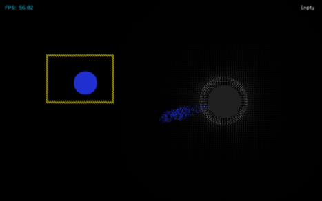
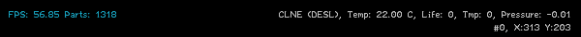

TPT元素说明(Version 96 Snapshot 219)
目录
Instruction前言----------------------------------------------------------------15
Variable元素参数--------------------------------------------------------------16
Type值-----------------------------------------------------------------16
Life值------------------------------------------------------------------16
Ctype值----------------------------------------------------------------16
X,Y值------------------------------------------------------------------16
Vx,Vy值----------------------------------------------------------------17
Temp值----------------------------------------------------------------17
Flags值-----------------------------------------------------------------17
Tmp值-----------------------------------------------------------------17
Tmp2值----------------------------------------------------------------17
Dcolour值---------------------------------------------------------------18
Pavg0值----------------------------------------------------------------18
Pavg1值----------------------------------------------------------------18
 Wall墙类---------------------------------------------------------------------19
Wall墙类---------------------------------------------------------------------19
清除墙【ErasesWalls】-----------------------------------------------------19
导体墙【ConductiveWall】--------------------------------------------------19
电控墙【Ewall】----------------------------------------------------------19
检测器【Detector】-------------------------------------------------------20
 风向计【Streamline】------------------------------------------------------20
风向计【Streamline】------------------------------------------------------20
风扇【Fan】-------------------------------------------------------------21
液体墙【LiquidPermeable】--------------------------------------------------21
{kind=link}
吸收墙【AbsorbingWall】---------------------------------------------------22
{kind=link}
墙【Wall】--------------------------------------------------------------23
{kind=link}
压力墙【NonpermeableWall】------------------------------------------------23
{kind=link}
粉末墙【PowderPermeableWall】---------------------------------------------23
{kind=link}
导体【Conductor】--------------------------------------------------------24
{kind=link}
电锁体【EHole】---------------------------------------------------------24
{kind=link}
气体墙【GaspermeableWall】------------------------------------------------24
{kind=link}
引力墙【GravityWall】-----------------------------------------------------25
{kind=link}
能量墙【EnergyWall】------------------------------------------------------26
{kind=link}
阻压墙【PressureWall】----------------------------------------------------27
{kind=link}
清除一切【Eraser】--------------------------------------------------------27
{kind=link}
静止墙【Freezes】--------------------------------------------------------27
{kind=link}
 Electronics电子类--------------------------------------------------------------29
Electronics电子类--------------------------------------------------------------29
金属(METL)【Metal】Type:014------------------------------------------------29
电脉冲(SPRK)【Spark】Type:015-----------------------------------------------29
P型硅(PSCN)【PtypeSilicon】Type:035------------------------------------------30
N型硅(NSCN)【NtypeSilicon】Type:036-----------------------------------------30
绝缘体(INSL)【Insulator】Type:038---------------------------------------------31
负温度系数热敏电阻(NTCT)【NegativeTemperatureCoefficientThermistor】Type:043---------31
正温度系数热敏电阻(PTCT)【PositiveTemperatureCoefficientThermistor】Type:046-----------32
电极(ETRD)【Electrode】Type:050---------------------------------------------32
电池(BTRY)【Battery】Type:053-----------------------------------------------32
开关(SWCH)【Switch】Type:056-----------------------------------------------33
绝缘线(INWR)【InsulatedWire】Type:062----------------------------------------33
特斯拉线圈(TESC)【TeslaCoil】Type:088-----------------------------------------34
瞬时导体(INST)【InstantConductor(InstantlyConducts)】Type:106-----------------------34
WiFi(WIFI)【WiFi】Type:124--------------------------------------------------34
A射线发射器(ARAY)【AtypeRayEmitter】Type:126B 射线(BRAY)Type:127------------------35
电磁脉冲武器(EMP)【ElectromagneticPulse】Type:134-------------------------------36
WireWorld线(WWLD)【WireWorldWire】Type:156----------------------------------37
物质射线发射器(CRAY)【CRayEmitter(ParticleRayEmitter)】Type:167---------------------37
钨(TUNG)【Tungsten】Type:171-----------------------------------------------38
D射线发射器(DRAY)【DuplicatorRayEmitter】Type:178-------------------------------38
 PoweredMaterial可控材料-------------------------------------------------------39
PoweredMaterial可控材料-------------------------------------------------------39
液晶(LCRY)【LiquidCrystal】Type:054-------------------------------------------39
 可控复制体(PCLN)【PoweredClone】Type:074-------------------------------------39
可控复制体(PCLN)【PoweredClone】Type:074-------------------------------------39
热开关(HSWC)【HeatSwitch】Type:075------------------------------------------39
延时器(DLAY)【Delay】Type:079----------------------------------------------40
堆栈(STOR)【Store】Type:083------------------------------------------------40
可控虚空(PVOD)【PoweredVoid】Type:084---------------------------------------41
压力泵(PUMP)【PressurePump】Type:097----------------------------------------42
可控可破坏复制体(PBCN)【BreakablePoweredClone】Type:153------------------------42
引力泵(GPMP)【GravityPump】Type:154-----------------------------------------42
可控动力管(PPIP)【PoweredPipe】Type:161--------------------------------------43
 Sensors传感器-----------------------------------------------------------------44
Sensors传感器-----------------------------------------------------------------44
虚无(INVS)【InvisibleType:115------------------------------------------------44
探测器(DTEC)【Detector】Type:162--------------------------------------------45
温度传感器(TSNS)【TemperatureSensor】Type:164---------------------------------45
压力传感器(PSNS)【PressureSensor】Type:172------------------------------------46
生命探测器(LSNS)【LifeSensor】Type:185----------------------------------------46
{kind=link}
线性探测器(LDTC)【LinearDetector】Type:186-------------------------------------47
{kind=link}
速度探测器(VSNS)【VelocitySensor】Type:189------------------------------------47
Force动力材料-----------------------------------------------------------------48
动力管(PIPE)【Pipe】Type:099------------------------------------------------48
加速器(ACEL)【Accelerator】Type:137------------------------------------------49
减速器(DCEL)【Decelerator】Type:138------------------------------------------49
重力炸弹(GBMB)【GravityBomb】Type:157---------------------------------------49
{kind=link}
力射线发射器(FRAY)【ForceRayEmitter】Type:159----------------------------------50
反射极(RPEL)【Repeller】Type:160---------------------------------------------50
 压力炸弹(DMG)【Damage】Type:163-------------------------------------------50
压力炸弹(DMG)【Damage】Type:163-------------------------------------------50
活塞(PSTN)【Piston】Type:168------------------------------------------------50
支架(FRME)【Frame】Type:169-----------------------------------------------51
{kind=link}
 Explosives爆炸物---------------------------------------------------------------52
Explosives爆炸物---------------------------------------------------------------52
火焰(FIRE)【Fire】Type:004--------------------------------------------------52
黑火药(GUN)【Gunpowder】Type:007------------------------------------------52
硝化甘油(NITR)【Nitroglycerin】Type:008----------------------------------------52
C4塑胶炸弹(C4)【C4】Type:011-----------------------------------------------52
固态铷(RBDM)【Rubidium】Type:041-------------------------------------------53
液态铷(LRBD)【LiquidRubidium】Type:042---------------------------------------53
电光火球/球状闪电(THDR)【Thunder】Type:048-----------------------------------53
铝热剂(THRM)【Thermite】Type:065-------------------------------------------53
冷焰(CFLM)【SubzeroFlame】Type:068------------------------------------------54
烟花(FIRW)【Fireworks】Type:069---------------------------------------------54
导火线(FUSE)【Fuse】Type:070-----------------------------------------------54
导火线粉尘(FSEP)【Fusepowder】Type:071---------------------------------------54
闪电(LIGH)【Lightning】Type:087----------------------------------------------54
高爆炸药(DEST)【DestructiveBomb】Type:089-------------------------------------55
 传统烟花(FWRK)【OriginalFireworks】Type:098------------------------------------55
传统烟花(FWRK)【OriginalFireworks】Type:098------------------------------------55
炸药(BOMB)【Bomb】Type:129 火花(EMBR)【Ember】Type:147-----------------------55
C5低温炸弹(C5)【C5】Type:130-----------------------------------------------56
三硝基甲苯(TNT)【Trinitrotoluene】Type:139-------------------------------------56
导火索(IGNC)【IgnitionCord】Type:140-----------------------------------------56
引力炸弹(GBMB)【GravityBomb】Type:157---------------------------------------56
锂(LITH)【Lithium】Type:191-------------------------------------------------56
Gases气体--------------------------------------------------------------------57
石油气(GAS)【Gas】Type:010------------------------------------------------57
水蒸气(WTRV)【WaterVapor】Type:023-----------------------------------------57
等离子体(PLSM)【Plasma】Type:049-------------------------------------------57
惰性气体(NBLE)【NobleGas】Type:052------------------------------------------58
烟(SMKE)【Smoke】Type:057-------------------------------------------------58
氧气(OXYG)【Oxygen】Type:061----------------------------------------------58
二氧化碳(CO2)【CarbonDioxide】Type:080---------------------------------------58
酸气(CAUS)【CausticGas】Type:086--------------------------------------------59
雾(FOG)【Fog】Type:092----------------------------------------------------59
{kind=link}
波义耳气(BOYL)【Boyle】Type:141---------------------------------------------59
氢气(HYGN)【Hydrogen】Type:148--------------------------------------------60
制冷剂(RFRG)【Refrigerant】Type:183------------------------------------------60
{kind=link}
 Liquids液体-------------------------------------------------------------------61
Liquids液体-------------------------------------------------------------------61
水(WATR)【Water】Type:002-------------------------------------------------61
石油(OIL)【Oil】Type:003---------------------------------------------------62
岩浆(LAVA)【Lava】Type:006-------------------------------------------------62
酸(ACID)【Acid】Type:021---------------------------------------------------63
蒸馏水(DSTW)【DistilledWater】Type:025----------------------------------------64
盐水(SLTW)【SaltWater】Type:027---------------------------------------------64
蜡油(MWAX)【MoltenWax】Type:034-------------------------------------------64
 液氮(LN2)【LiquidNitrogen】Type:037------------------------------------------64
液氮(LN2)【LiquidNitrogen】Type:037------------------------------------------64
柴油(DESL)【Diesel】Type:058------------------------------------------------65
液氧(LOXY)【LiquidOxygen】Type:060------------------------------------------65
荧光液(GLOW)【Glow】Type:066----------------------------------------------65
碳酸水(BUBW)【BubbledWater(CarbonatedWater)】Type:082--------------------------66
奇特液体(BIZR)Type:103奇特气体(BIZG)Type:104奇特固体(BIZS)【Bizarre】Type:105----------66
浆糊(PSTE)【Paste】Type:111 固体浆糊(PSTS)Type:112------------------------------66
胶体(GEL)【Gel】Type:142---------------------------------------------------66
肥皂(SOAP)【Soap】Type:149------------------------------------------------67
水银(MERC)【Mercury】Type:152----------------------------------------------67
病毒(VIRS)【Virus】Type:174 病毒块(VRSS)Type:175 病毒气(VRSG)Type:176---------------67
Powders粉末------------------------------------------------------------------68
尘埃(DUST)【Dust】Type:001-------------------------------------------------68
石粉(STNE)【Stone】Type:005------------------------------------------------68
 雪(SNOW)【Snow】Type:016-------------------------------------------------68
雪(SNOW)【Snow】Type:016-------------------------------------------------68
混凝土(CNCT)【Concrete】Type:024--------------------------------------------69
盐(SALT)【Salt】Type:026---------------------------------------------------69
金属粉(BRMT)【BrokenMetal】Type:030-----------------------------------------69
沙子(SAND)【Sand】Type:044------------------------------------------------69
碎玻璃(BGLA)【BrokenGlass】Type:047------------------------------------------70
酵母(YEST)【Yeast】Type:063 菌尸(DYST)【DeadYeast】Type:064----------------------70
煤粉(BCOL)【BrokenCoal】Type:073--------------------------------------------70
寒尘(FRZZ)【Freeze】Type:100-----------------------------------------------70
引力尘(GRAV)【Gravity】Type:102---------------------------------------------71
{kind=link}
反引力尘(ANAR)【AntiAirParticle】Type:113--------------------------------------71
石英砂(PQRT)【BrokenQuartz】Type:133----------------------------------------71
电渣(BREL)【BrokenElectronics】Type:135----------------------------------------71
粘土砂(CLST)【ClayDust】Type:155--------------------------------------------71
锯末(SAWD)【Sawdust】Type:181---------------------------------------------72
{kind=link}
硅粉(SLCN)【Silicon】Type:191-----------------------------------------------72
{kind=link}
Solids固体--------------------------------------------------------------------73
粘土(GOO)【Goo】Type:012-------------------------------------------------73
冰(ICE)【Ice】Type:013-----------------------------------------------------73
木材(WOOD)【Wood】Type:017----------------------------------------------73
植物(PLNT)【Plant】Type:020------------------------------------------------73
脆金属(BMTL)【BreakableMetal】Type:029---------------------------------------74
蜡(WAX)【Wax】Type:033---------------------------------------------------74
玻璃(GLAS)【Glass】Type:045------------------------------------------------74
氮冰(NICE)【NitrogenIce】Type:051--------------------------------------------74
煤(COAL)【Coal】Type:059--------------------------------------------------75
砖块(BRCK)【Brick】Type:067-------------------------------------------------75
铁(IRON)【Iron】Type:076---------------------------------------------------75
 干冰(DRIC)【DryIce】Type:081------------------------------------------------75
干冰(DRIC)【DryIce】Type:081------------------------------------------------75
海绵(SPNG)【Sponge】Type:090----------------------------------------------76
霜(RIME)【Rime】Type:091--------------------------------------------------76
藤蔓(VINE)【Vine】Type:114-------------------------------------------------76
自修复膜(SHLD)【Shield】Type:119 修复膜2/3/4(SHD2/3/4)Type:120/121/122--------------76
滤镜(F)【Filter】Type:125----------------------------------------------------77
石英(QRTZ)【Quartz】Type:132-----------------------------------------------79
钛(TTAN)【Titanium】Type:144-----------------------------------------------80
金(GOLD)【Gold】Type:170--------------------------------------------------80
陶瓷(CRMC)【Ceramic】Type:179----------------------------------------------80
导热体(HEAC)【Rapidheatconductor】Type:180------------------------------------80
铂(PTNM)【Platinum】Type:188-----------------------------------------------81
岩石(ROCK)【Rock】Type:190------------------------------------------------81
Radioactive放射性物质----------------------------------------------------------82
中子(NEUT)【Neutrons】Type:018---------------------------------------------82
钚(PLUT)【Plutonium】Type:019-----------------------------------------------82
光子(PHOT)【Photons】Type:031----------------------------------------------83
铀(URAN)【Uranium】Type:032-----------------------------------------------83
反物质(AMTR)【Antimatter】Type:072------------------------------------------83
重水(DEUT)【DeuteriumOxide】Type:095----------------------------------------83
迁跃粉(WARP)【Warp】Type:096----------------------------------------------84
同位素Z(ISOZ)【IsotopeZ】Type:107-------------------------------------------84
固态同位素Z(ISZS)【SolidISOZ】Type:108----------------------------------------84
奇点(SING)【Singularity】Type:131---------------------------------------------84
电子(ELEC)【Electrons】Type:136----------------------------------------------84
奇异物质(EXOT)【ExoticMatter】Type:145----------------------------------------85
{kind=link}
振金(VIBR)【Vibranium】Type:165---------------------------------------------85
振金粉(BVBR)【BrokenVibranium】Type:166--------------------------------------86
质子(PROT)【Protons】Type:173----------------------------------------------86
引力子(GRVT)【Graviton】Type:177--------------------------------------------87
钋(POLO)【Polonium】Type:182----------------------------------------------87
Special特殊-------------------------------------------------------------------88
复制体(CLNE)【Clone】Type:009----------------------------------------------88
 虚空(VOID)【Void】Type:022-------------------------------------------------88
虚空(VOID)【Void】Type:022-------------------------------------------------88
钻石(DMND)【Diamond】Type:028--------------------------------------------88
吸气孔(VACU)【Vacuum】Type:039--------------------------------------------88
 排气孔(VENT)【AirVent】Type:040---------------------------------------------88
排气孔(VENT)【AirVent】Type:040---------------------------------------------88
火柴人(STKM)【Stickman】Type:055 火柴人出生点(SPWN)Type:118--------------------89
转化器(CONV)【Converter】Type:085-------------------------------------------89
可破坏复制体(BCLN)【BreakableClone】Type:093----------------------------------89
传送门入口(PRTI)【PortalIN】Type:109------------------------------------------89
传送门出口(PRTO)【PortalOUT】Type:110---------------------------------------90
火柴人二号(STK2)【SecondStickman】Type:128 火柴人二号出生点(SPWN2)Type:117---------90
智能微粒(TRON)【Tron】Type:143---------------------------------------------90
黑洞(BHOL)【BlackHole】Type:150---------------------------------------------90
白洞(WHOL)【WhiteHole】Type:151--------------------------------------------90
打手(FIGH)【Fighter】Type:158-----------------------------------------------90
Life生命游戏------------------------------------------------------------------91
生命游戏(GOL)【GameofLife】Type:078 Ctype:0-----------------------------------91
高等生命(HLIF)【HighLife】Ctype:1---------------------------------------------91
同化(ASIM)【Assimilation】Ctype:2---------------------------------------------91
2X2(2X2)【2X2】Ctype:3----------------------------------------------------92
日以继夜(DANI)【DayandNight】Ctype:4----------------------------------------92
阿米巴(AMOE)【Amoeba】Ctype:5---------------------------------------------92
移动(MOVE)【Move】Ctype:6------------------------------------------------93
假货(PGOL)【Pseudo】Ctype:7------------------------------------------------93
方片(DMOE)【Diamoeba】Ctype:8---------------------------------------------93
34(34)【34】Ctype:9-------------------------------------------------------94
长生(LLIF)【LongLife】Ctype:10-----------------------------------------------94
染色剂(STAN)【Stains】Ctype:11----------------------------------------------94
种子(SEED)【Seeds】Ctype:12------------------------------------------------95
迷宫(MAZE)【Maze】Ctype:13------------------------------------------------95
凝固物(COAG)【Coagulations】Ctype:14-----------------------------------------95
城墙(WALL)【Walledcities】Ctype:15-------------------------------------------96
木节(GNAR)【Gnarl】Ctype:16------------------------------------------------96
复制基因(REPL)【Replicator】Ctype:17------------------------------------------96
谜(MYST)【Mystery】Ctype:18------------------------------------------------97
边缘人(LOTE)【LivingontheEdge】Ctype:19---------------------------------------97
青蛙变体(FRG2)【LikeFrogsRule】Ctype:20---------------------------------------97
星球大战(STAR)【StarWars】Ctype:21-------------------------------------------98
青蛙(FROG)【Frogs】Ctype:22------------------------------------------------98
布莱恩6号(BRAN)【Brian6】Ctype:23-------------------------------------------98
？Secrets隐藏元素-------------------------------------------------------------99
空白(NONE)【None】Type:000-----------------------------------------------99
烟尘(MORT)【Mortvert】Type:077---------------------------------------------99
寒水(FRZW)【FrozenWater】Type:101------------------------------------------99
 速度尘(EQVE)【EqualVelocity】Type:116-----------------------------------------99
速度尘(EQVE)【EqualVelocity】Type:116-----------------------------------------99
大声笑！(LOLZ)【LaughOutLoud】Type:123--------------------------------------99
{kind=link}
爱心(LOVE)【Love】Type:094------------------------------------------------100
{kind=link}
布莱恩6号(BRAN)【Brian6】Type:146------------------------------------------100
 Tools工具-------------------------------------------------------------------101
Tools工具-------------------------------------------------------------------101
加热(HEAT)【Heat】-------------------------------------------------101
{kind=link}
制冷(COOL)【Cool】-------------------------------------------------101
{kind=link}
空气(AIR)【Air】----------------------------------------------------101
{kind=link}
真空(VAC)【Vacuum】-----------------------------------------------101
{kind=link}
正引力工具(PGRV)【PositiveGravityTool】----------------------------------102
{kind=link}
负引力工具(BGRV)【NegativeGravityTool】---------------------------------102
{kind=link}
混合工具(MIX)【Mix Tool】--------------------------------------------102
{kind=link}
气旋(CYCL)【Cyclone】-----------------------------------------------102
{kind=link}
风(WIND)【Wind】--------------------------------------------------102
{kind=link}
属性修改器(PROP)【EditPropertyTool】-----------------------------------103
{kind=link}
标记(SIGN)【Sign】--------------------------------------------------103
{kind=link}
采样器(SAMP)【Sampler】---------------------------------------------103
{kind=link}
Decoration tools装饰工具------------------------------------------------------104
Favorites收藏夹---------------------------------------------------------------110
Search for element查找元素-----------------------------------------------------110
附1:控制台的基本用法(Using the console)------------------------------------------111
Set命令---------------------------------------------------------------111
Quit命令---------------------------------------------------------------111
Create命令-------------------------------------------------------------111
Delete命令-------------------------------------------------------------111
Bubble命令-------------------------------------------------------------111
Reset命令--------------------------------------------------------------111
附2:HUD(headsupdisplay)------------------------------------------------------112
基本说明--------------------------------------------------------------112
调试模式(Debug)【快捷键D】-----------------------------------------------112
快捷键----------------------------------------------------------------112
附3:显示模式(Display Modes)----------------------------------------------------113
气流显示模式(Velocity display)-----------------------------------------------113
快捷键--------------------------------------------------------------113
显示内容-------------------------------------------------------------113
气压显示模式(Pressure display)-----------------------------------------------114
快捷键--------------------------------------------------------------114
显示内容-------------------------------------------------------------114
轨迹显示模式(Persistent display)----------------------------------------------115
快捷键--------------------------------------------------------------115
显示内容-------------------------------------------------------------115
标准显示模式(Fire display)--------------------------------------------------116
快捷键--------------------------------------------------------------116
显示内容-------------------------------------------------------------116
模糊显示模式(Blob display)-------------------------------------------------117
快捷键--------------------------------------------------------------117
显示内容-------------------------------------------------------------117
温度显示模式(Heat display)-------------------------------------------------118
快捷键--------------------------------------------------------------118
显示内容-------------------------------------------------------------118
环境温度显示和物质温度显示----------------------------------------------118
特效显示模式(Fancy display) ------------------------------------------------119
快捷键--------------------------------------------------------------119
显示内容-------------------------------------------------------------119
无特效显示模式(Nothing display)---------------------------------------------120
快捷键--------------------------------------------------------------120
显示内容-------------------------------------------------------------120
热传导显示模式(Heat gradient display)-----------------------------------------121
快捷键--------------------------------------------------------------121
显示内容-------------------------------------------------------------121
速压混合显示模式(Alternate velocity display)-------------------------------------122
快捷键--------------------------------------------------------------122
显示内容-------------------------------------------------------------122
Life显示模式(Life display)---------------------------------------------------123
快捷键--------------------------------------------------------------123
显示内容-------------------------------------------------------------123
网格工具(Grid)----------------------------------------------------------124
快捷键--------------------------------------------------------------124
显示内容-------------------------------------------------------------124
附4:快捷键(Hotkeys)-----------------------------------------------------------125
单快捷键(Single Hotkeys)---------------------------------------------------125
组合快捷键(Key Combinations)-----------------------------------------------125
附5: 元素导热速度表(Heat conduction speedometer)---------------------------------127
参考资料及延伸阅读 Reference&More--------------------------------------------128
Instruction--------------------------------------前言
时隔快5年了依旧没有等到Ike大大的新版元素说明，其实很久以前就想重新修订一下但由于太懒一直鸽到了96出来。
本篇元素说明是基于Ike的《TPT元素说明91.5 Snapshot54》和官方WIKI重新修订、排版并整理，当前版本为Version 96 Snapshot 219。修改了之前版本遗留的大量错误，并对LIFT电路相关的元素展开了详细的说明和具体操作指南。新增了元素导热速度表。
以下引用91.5的前言
本文是针对TPT初学者的初级教程，包含TPT中各元素的性质、制作方法以及一些简单用途。
大部分元素均附有该元素的Type值(TPT中各元素的唯一编码，一个Type值对应一种元素)。
本文以翻译官方Wiki中的内容为主，对一些明显错误做了修改，同时加入了一些额外补充。
感谢@白左，本文中的一些译名参考了其撰写的《元素说明V83.9.20121014》。
感谢@氢氧化氢对91.0版本新功能的修订和其他错误的改正。
感谢@流汗进行时、@crazyboy2000和TPT交流群的群友们对本文中错误的指正。
如果发现错误可以给我发邮件:ikesnowy@outlook.com。
TPT交流群:179225194
Ike
2016.8.1
感谢 @Ike撰写的《TPT元素说明91.5 Snapshot54》本文是基于《TPT元素说明91.5 Snapshot54》部分重写并重新排版
感谢 物理沙盘实验室(99309202)的群友们对本文错误指正
如果发现错误可以发送邮件到：draonrster@gmail.com 2380723764@qq.com
DragonRSter
2021.7.11
Variable-------------------------------------元素参数
Type值
元素的唯一编号，用于表示该元素的种类。
Life值
(用于记录时间/寿命/损耗的参数，一般单位为帧，但也可用于记录强度/状态)
表示病毒(VIRS)的存在帧数。
表示酸(ACID)还能腐蚀多少物质。
表示开关(SWCH)的状态。
表示火柴人(STKM)的生命值。
表示燃烧时间(FIRE)。
表示传送门(PRTI/PRTO)产生的气压影响。
Ctype值

(用于记录物质，等于被记录物质的Type值)
复制体(BCLN,PCLN,PBCN,CLNE)：代表复制体正在复制的元素种类。
制造凝固物(ICE)：比如将冰(ICE)的Ctype值改为中子(NEUT)，熔化后会变为中子。
制造熔融物(LAVA)：比如将岩浆(LAVA)的Ctype设置为钻石(DMND)即可得到熔融的钻石。
电脉冲(SPRK)：Ctype表示它正流经物质的种类。
颜色(PHOT,FILT,FWRK,GLOW,BRAY)：用于储存这些物质的颜色数值。
动力管(PIPE)：用于修改其模式(红，绿，蓝和未激活时)。
石英(QRTZ)：用于记录石英的生长速度，改变其Ctype可改变其生长速度。
Worldwire线(WWLD)：改变其状态(头、尾、空)。
X,Y值
(用于记录物质的位置坐标)
用于改变物质的位置。
通过把大量物质的坐标设为相同点可以制造出黑洞(BHOL)。
Vx,Vy值

(用于记录物质的速度)
用于改变物质在X,Y方向上的分速率。
Temp值
(用于记录物质的温度)
用于改变物质的温度，单位是开尔文(K)。
Flags值
(用于标记某些物质，使程序忽略它们)
该值应用在程序内部，会自动复原且不会随存档保存。
用于标记液体团内部的液体颗粒，使得这些颗粒不会被运动模拟模块计算进去，从而节省CPU使用量。
Tmp值
(特征参数，根据元素种类有不同的作用)
动力管(PIPE)：用于表示其内运送的元素种类。
物质射线发射器(CRAY)：用于表示射线长度。
生命元素(LIFE)：用于某些生命元素的颜色表示。
Tmp2值
(特征参数2，与Tmp值作用相同)
探测器(DTEC)：用于调节侦测范围。
活塞(PSTN)：用于调节活塞的最大长度。
病毒(VIRS)：用于记录被感染物质的Type值。
奇异物质(EXOT)：表示奇异物质最大所能接受的辐射量。
Dcolour值
(用于记录物质的外加颜色)
用于记录物质的外加颜色(用装饰工具decorationtools染上去的颜色)。
只接受16进制颜色码，如0xFF000000为黑色。
Pavg0值
(新的特征值)
在堆栈(STOR)中用于记录被吸收元素的Tmp值。
Pavg1值
(新的特征值)
在堆栈(STOR)中用于记录被吸收元素的Ctype值。
Wall--------------------------------------------墙类
这个种类包含18种物质，15种是真正的墙(能阻挡物质)，所有的都无法被摧毁。
注：一些物质例如BRAY(由ARAY产生时)能穿过任何墙，这只是因为它(们)在生成时无视墙类，并不能出现在大多数墙体内LIGH也是如此
清除墙【ErasesWalls】
描述："清除墙类."
阻挡：不适用
允许：不适用
特殊：无
导体墙【ConductiveWall】
描述"阻挡一切导体"
阻挡：一切
允许：没有
特殊：能传导SPRK(电脉冲)。
示例：
电控墙【E-wall】
描述："电控墙，通电时允许通过"
阻挡：一切，除非通电。
允许：没有，除非通电。
特殊：未通电时性质类似墙(不可导电)，通电时类似导体。
示例：
检测器【Detector】
描述："检测器。内部存在物质时，发出电脉冲。"
阻挡：无
允许：一切
特殊：：内部有物质时向周围的导体发出电脉冲。激活时，发出橙色光。
示例：
风向计【Streamline】
描述："风向计。设置一个风向计的起始点。"
阻挡：无
允许：一切
特殊：显示周围压力的运动方向。与其他墙不同，笔刷的大小不会产生影响。
示例：
 风扇【Fan】
风扇【Fan】
描述："风扇产生气压使用直线工具设置方向和强度"
阻挡：无
允许：一切
特殊：产生压力和气流。要使用，把风扇放在需要的地方，继续选定风扇，按住上档键(Shift)点击风扇并拖动鼠标来决定气流方向。
风扇给予火柴人产生气流的能力，就像它是个普通物质一样它的头会变为淡蓝色，会被任何其他它所碰到的物体替代。
使用方法：设置风扇的位置，不要选择其他的元素，按住shift，鼠标(左键)按住你设置好的风扇，拖动鼠标，直线的方向(风扇到光标位置)和长度即为气流的方向和强度。
示例：
液体墙【LiquidPermeable】
描述：“阻挡大多数物体，除了液体，导体"
阻挡：气体，粉末，固体和能量粒子。
允许：液体和压力
特殊：：向周围任何导体传播电脉冲。
示例：
吸收墙【AbsorbingWall】
描述："吸收物质，允许气压通过"
阻挡：没有，但会吸收它们。
允许：压力
特殊：吸收所有进入的物质但是，如果物质的速度足够快(具体未知)，且穿过吸收墙的密度较小，物质能顺利通过。
示例：

墙【Wall】
描述："基础墙，阻挡一切。"
阻挡：一切
允许：没有
特殊：允许射线发射器(ARAY)的射线通过。
压力墙【Non-permeableWall】
描述："允许压力通过，阻挡一切物质。"
阻挡：气体，液体，粉末，固体，能量粒子。
允许：压力
特殊：无
示例：
粉末墙【Powder-PermeableWall】
描述："允许粉末通过，阻挡其他所有物质。"
阻挡：气体，液体，固体，能量粒子
允许：粉末和压力。
特殊：无
示例：
导体【Conductor】
描述："允许所有物质通过，导电。"
阻挡：无
允许：一切
特殊：向周围任何导体传播电脉冲。
电锁体【E-Hole】
描述："电锁体吸收物质，通电时释放。"
阻挡：没有，但会吸收它们。
允许：压力
特殊：未通电时吸收其中物质，通电时释放。吸收过多物质时产生黑洞每个像素的电锁体最多能吸收1500个像素的物质，超过形成黑洞。电锁体也会让火柴人和打手失去喷气背包。
示例：
气体墙【GaspermeableWall】
描述："允许气体通过。"
阻挡：液体、粉末、固体、能量粒子
允许：气体和压力。
特殊：这种墙也会允许火焰通过。
示例：
引力墙【GravityWall】
描述："引力墙范围内的万有引力(译注：默认的普通引力除外，就是按W切换的那个)将失效。"
阻挡：无
允许：一切
特殊：如果你用引力墙画了一个框，在框内万有引力将失效。它并不会阻挡任何东西，只是将其内的物质的引力值改为0.
当一个火柴人/打手触碰到它时,小型的火箭鞋将会出现(也叫喷气背包),给予它通过向相反方向喷出等离子体来飞行的能力。一个火柴人仍然能使用其他物质，但是走路或跳跃时一定会产生等离子体，穿过可燃物质时危险。火柴人装备着喷气背包时，不会被等离子体所伤，但是仍然会被它烫伤。
控制：
^方向键：上升
<方向键：向左
>方向键：向右
<>同时按住：匀速缓慢下降
示例：

能量墙【EnergyWall】
描述："允许能量粒子通过，阻挡其他物质。"
阻挡：气体，液体，粉末，固体
允许：能量和压力
特殊：无
阻压墙【PressureWall】
描述："允许所有物质通过，隔绝压力。"
阻挡：压力
允许：所有物质
特殊：无
示例：
清除一切【Eraser】
描述："清除墙、物质、标识。"
阻挡：不适用
允许：不适用
特殊：无
静止墙【Freezes】
描述："静止其内所有物质，除非通电。"
阻止其内物质移动和变化。I如果其他导电的墙向静止墙发出电脉冲，静止效果将失效，物质将继续移动和变化。(电脉冲消失后恢复静止效果)
示例：
Electronics----------------------------------电子类
操作技巧：CTRL+等号可以移除屏幕上的所有电脉冲。
金属(METL)【Metal】----------------------------------------------------Type:014
描述：最基础的导体，可以熔化。电子通过时，会将其加热至300C.在1000C/1273.15K时，会熔化成铁水(LAVA)。铁水仍然是铁，可如液体一样流动。冷却后，铁水会凝固为铁.
制取：铁(IRON)熔化后倒在煤(COAL)或者煤粉(BCOL)上并冷却可得到金属(METL)。
熔点：999.85℃/1273k，变为MoltenMETL
特性：在电脉冲(SPRK)通过时会升温并产生少量压力。
导热率：251
初始温度：22℃/295.15k
示例：
电脉冲(SPRK)【Spark】--------------------------------------------------Type:015
描述：电脉冲不能单独放置(并不是一个真实的粒子)，你需要将其放在导体上。电子在多数导体中，在导体中，电子每8帧移动一次，前4帧是激发状态，后4帧抑制状态，然后可接收新电子。水和GOLD是例外。电子在导体中流动，会产生热量。两段导体之间空隙不超过一个像素时，电脉冲可以跳过空隙继续传播，在大多数情况下，INSL绝缘体会阻碍电子的流动。两个导体之间，只要存在绝缘体，电子将无法通过。在绝缘体中，某些元素也不会被激发，但是个别元素(如PSTN)是例外。某些元素，有特别的规则限制，其电流可导向哪些导体。参见各个元素
初始温度：22℃/295.15k
导热率：251
示例：
SPRK是在以下情况下创建的：
与BRTY相邻的导电物质
ELEC,BRAY,LIGH或THDR击中导体。
PHOT击中PSCN和NSCN组成的太阳能电极板(见右图)
PSNS,TSNS,DTEC或LSNS被激活
CLNE(Ctype：SPRK)在导体旁边
DLAYLife为0时旁边是NSCN
P型硅(PSCN)【P-typeSilicon】--------------------------------------------Type:035
描述：可以电脉冲传导给任何导体，可以熔化。P型硅与N型硅(NSCN)紧贴可以形成一个简单的太阳能电池板，有光子撞击P型硅的时候会产生电脉冲。另外，P型硅也可以用来激活一些动力材料和制作二极管。1个像素厚的P型硅层，铺在N型硅表面，可制成简易的太阳能电池板。通常用于激活动力材料或二极管。
熔点：1413.85℃/1687k，变成LAVA(PSCN)
导热率：251
初始温度：22℃/295.15k
示例：
N型硅(NSCN)【N-typeSilicon】-------------------------------------------Type:036
描述：只要满足目标材料的条件(如果存在)，例如具有正确温度的NTCT，NSCN就会传导到大多数导体。但不会向P型硅(PSCN)传递电脉冲(即电脉冲只能从PSCN单向传导到NSCN)，可以熔化，可以与PSCN结合形成PN结使用。用于关闭一些可控材料和制作二极管。NSCN还用作WIFI的仅输出材料，INST的输出，以及关闭SWCH
熔点：1413.85℃/1687k，变成LAVA(NSCN)
导热率：251
初始温度：22℃/295.15k
示例：
绝缘体(INSL)【Insulator】------------------------------------------------Type:038
描述：绝缘体，既不吸收，也不释放热量给其它元素。这意味着，它可用于保护对热量敏感的元素。一个像素宽，即可起作用。但是绝缘体易燃，需要注意。绝缘体可用于阻止电子，在间距小超过2个像素的导线和导体间流动。(相邻接触或间隔1个像素，电子都可以流动)这样，将1个像素宽的导线，置于绝缘体之间，将阻隔电子流动。易燃(不能碰到明火和熔融物)，谨慎使用。
导热率：0
初始温度：22℃/295.15k
示例：

负温度系数热敏电阻(NTCT)【NegativeTemperatureCoefficientThermistor】------Type:043
描述：半导体，只有超过100℃时才导电，如果与METL相连，则会将自身加热至200°C。不持续加热会自动冷却(2.5k/帧)到22℃，可以用于给特定物质降温。能够熔化。可以通过PSCN/NSCN输入/输出电脉冲，当一个像素的NTCT周围3x3的范围内有通电的金属(METL)时温度自动上升至199.85℃。
熔点：1413.85℃/1687k，变成MoltenNTCT
导热率：251
初始温度：22℃/295.15k。
示例：
(利用NTCT实现的“与”门)
正温度系数热敏电阻(PTCT)【PositiveTemperatureCoefficientThermistor】--------Type:046
描述：半导体，只有低于100℃时才导电，也能自动冷却(2.5k/帧)到22℃左右，可以熔化。可以通过PSCN/NSCN输入/输出电脉冲，当一个像素的PTCT周围3x3的范围内有通电的金属(METL)时温度自动上升至199.85℃。
熔点：1140.85℃/1414k时变成MoltenPTCT
导热率：251
初始温度：22℃/295.15k
示例：
(利用PTCT实现的“非”门)
电极(ETRD)【Electrode】-------------------------------------------------Type:050
描述：一旦通电，会在相邻两个电极之间产生等离子体(PLSM，9000+℃)，每次持续20帧，如果用的太多会停不下来。
其他：墙不会干扰等离子体的产生，不过有可能会隔开；如果两个电极之间有绝缘体(INSL)阻隔则不会产生等离子体。
元素参数：Life值为产生等离子体的持续时间(需要同时修改两边的电极)。
导热率：251
初始温度：22℃/295.15k
示例：
电池(BTRY)【Battery】---------------------------------------------------Type:053
描述：固体，能提供稳定的电脉冲给导电元素(除液体)，沸腾后变成等离子体(PLSM)。
沸点：1999.85℃/2273k
导热率：251
初始温度：22℃/295.15k
示例：
开关(SWCH)【Switch】--------------------------------------------------Type:056
描述：PSCN导入电时，开关可导电。从NSCN导入电时，开关不可导电。SWCH关闭时，是暗绿色，开启时，是绿色。通过装饰功能，开关可制作实用的电灯泡它导电的速度，与从哪儿导入电有关，这是一个粒子顺序的话题。在开始导电时，它的导电速度就保存下来，从左上角导入，则它的导电速度更快，其它方向导入，则偏慢一些。
导热率：251
初始温度：22℃/295.15k
示例：
绝缘线(INWR)【InsulatedWire】-------------------------------------------Type:062
描述：只能在P型硅(PSCN)与N型硅(NSCN)之间传递电脉冲(双向)，可以熔化。INWR比大多数其他元素具有更多受限制的SPRK传导规则，因此是“绝缘的”。INWR执行SPRK往返的元素只有5个：
IMWR,PSCN,NSCN--INWR与这些元素互相传导
SWCH,WIFI-INWR传导至这些元素，但不从这些元素传导
特点：INWR对于BRAY射线是透明的，射线可以直接通过而不是被阻挡。这允许BRAY光束相互交叉——BRAY光束通常会阻挡穿过它的其他白色BRAY光束，除非光束穿过的空间包含对BRAY透明的粒子。
其他一些元素对BRAY也是透明的，例如FILT和ARAY，但大多数都阻挡了BRAY。
INWR不会被任何穿过它的BRAY光束激发(大多数导体在被BRAY击中时会被激发)。
用途：可用于电子产品以允许为SPRK创建“交叉”，因为INWR不会与大多数其他电子元件进行传导或传导。
对BRAY的透明性意味着INWR可用作打印机中的ROM(由ARAY读取)以存储图像和解码器。
熔点：1413.85℃/1687k，变成LAVA(INWR)
导热率：251
初始温度：22℃/295.15k
示例：
特斯拉线圈(TESC)【TeslaCoil】-------------------------------------------Type:088
描述：通电可以产生闪电(LIGH，高温，可以穿透一切，产生较大的压力并使一些导电材料产生电脉冲)。将它做成线圈状(默认状态下，先左键点击空白处，再缩小光标，右键，再缩小光标，左键……)效果更佳。
元素参数：Tmp值可用于设定闪电的长度
导热率：251
初始温度：22℃/295.15k
示例：
瞬时导体(INST)【InstantConductor(InstantlyConducts)】-----------------------Type:106
描述：导电速度和导电墙相同，只能通过P型硅(PSCN)输入电脉冲，N型硅(NSCN)输出电脉冲。与导电墙性质类似不会被高压破坏，也不能熔融。
导热率：251
初始温度：22℃/295.15k
示例：
Wi-Fi(WIFI)【WiFi】-----------------------------------------------------Type:124
描述：能无线转移电脉冲，可使用大多数导电物质输入电脉冲(除了N型硅)，只能由N型硅(NSCN)、绝缘线(INWR)或P型硅(PSCN)输出电脉冲。不导热。在高压下会损坏。89.0版本后传导电脉冲时会延迟一帧。
频道：
Wi-Fi有99个频道可以使用，频道之间互不干扰，第100个频道是单独的，从-273.15——-200.01。Wi-Fi只会和相同频道的Wi-Fi传输电脉冲。相邻频道之间相隔100℃(会变颜色)。在调试模式(Debug，热键“D”)下，相同频道的WIFI之间会出现连接线。
可以使用升温笔/降温笔(HEAT/COOL)来调整Wi-Fi的频道。设置WiFi频道最简单的方法是使用PROP。只需将WiFi的温度更改为频道乘以100。例如，要获得频道47，您将温度设置为4700。实际频道显示在Tmp值中，以便更容易查看。
压力极限：15pressure，会碎裂成金属粉(BRMT)
导热率：0
初始温度：22℃/295.15k
示例：
A射线发射器(ARAY)【A-typeRayEmitter】-------Type:126B 射线(BRAY)-------Type:127
导热率：0
初始温度：22℃/295.15k
其他：在69版本之后，ARAY不再导热，其产生的B射线(BRAY)温度将会是ARAY的温度。这一特性被用来制作恒温器。
染色：射线(BRAY)经过滤镜时会以设定好的染色方式染色。
描述：可以从所有电导体，甚至SWCH接收SPRK。能射出B射线(BRAY)，可以从任意导电物质中接受电脉冲，之后会沿着电脉冲的方向发射射线，多个射线相撞会产生固体B射线(会慢慢消失)。与其他电子设备不同，ARAY必须从与其直接接触的像素接收SPRK。
其他模式：
由P型硅(PSCN)输入电脉冲时会产生另一种不能导电的射线，会清除其他的BRAY，并很快消失。
由超导线(INST)输入电脉冲时产生的射线具有穿透性，可以穿透多个导电材料。
来自ARAY的BRAY也可以具有不同的属性，具体取决于用于激发它的内容。如果设置了ARAY的Life，则生成的BRAY将使用ARAY的Life。
BRAY是ARAY被任何导体激活所产生的。它的颜色由30位色谱上的颜色之间的比率决定。它可以容纳30位数字，并且默认情况下(除非它是由PSCN创建的)，所有30位都设置为白色。您可以使用FILT将该值设置为不同的值或对其执行按位运算。
BRAY元素在创建后迅速消失，Life为30帧。与中子和光子不同，BRAY穿过所有壁元素，除非碰到一个不透明的粒子。如果BRAY击中导体，例如METL，则该元素会产生SPRK。BRAY也可以通过ARAY。
如果两条BRAY线发生碰撞，它们会在该点创建一个“实心”BRAY，该点将缓慢消失，Life为1020。“实心”BRAY的独特之处在于它也是透明的。因此，虽然BRAY通常不透明，但当它们创建“实体”BRAY时它会变得透明。任何穿过“固体”BRAY的白色BRAY都会将BRAY的Life恢复到1020。
用PSCN激活ARAY将创建一个棕色BRAY。棕色BRAY类似于白色BRAY，但不激活导体，也不与FILT相互作用。它甚至没有波长。它还会擦除任何活动的白色BRAY，在与自身碰撞时不会创建“实体”版本。
透明元件
BRAY可以穿过的元件。透明元素包括“固体”BRAY、FILT、STOR、ARAY、INWR和激活的SWCH。
INWR比较特殊，BRAY可以穿过INWR而且不会被激活。
BRAY与SWCH
BRAY可以通过打开的SWCH。如果SWCH关闭，则可以使用与其直接相邻的两个棕色BRAY(与两条棕色BRAYA交点的位置)来打开它。如果SWCH处于开启状态，情况也是如此。
电磁脉冲武器(EMP)【ElectromagneticPulse】-------------------------------Type:134
描述：EMP会随机摧毁所有正在工作(通电)的电子产品。有几率使受到EMP影响的Wi-Fi(WIFI)的频道改变。同样的，延时计(DLAY)的延时时间也可能被随机改变。A射线发射器(ARAY)、开关(SWCH)、金属(METL)、脆金属(BMTL)、Wi-Fi(WIFI)等可能会发热或损坏。“普通”导体(METL、TTAN、IRON、RBDM、BMTL、TUNG、加压QRTZ)和INWR不受EMP影响。
(注：EMP是全屏幕有效的)
元素参数：恢复时间(Life)默认为220帧。
导热率：121
初始温度：22℃/295.15k
示例：
WireWorld线(WWLD)【WireWorldWire】-----------------------------------Type:156
描述：WWLD是一种基于另一个名为WireWorld的游戏的固体导电元素。WWLD不会因压力而熔化或破裂。WWLD接受来自PSCN的SPRK并提供给NSCN。WWLD的工作原理与GOL相同，应用简单的数学规则会导致四种不同状态的生成；空、电子头(蓝色)、电子尾(白色)和导体(橙色)。
它遵循的规则是：
空→空
电子头→电子尾
电子尾→导体
如果恰好一两个相邻单元是电子头，则导体→电子头，否则仍为导体。
(请注意，一个“单元格”是一个像素)
导热率：250
初始温度：22℃/295.15k
示例：
(四循环时钟4-CycleClock)
物质射线发射器(CRAY)【C-RayEmitter(ParticleRayEmitter)】-------------------Type:167
描述：当CRAY从与粒子直接相邻(接触)的任何一侧(包括对角线)发出SPRK时，它将向相反方向发射粒子束。其属性取决于引发它的导体、温度、Tmp、Tmp2、Ctype和Life的组合。
Ctype设置CRAY产生的粒子的类型。Ctype为0(默认)意味着它将其Ctype设置为接触它的第一个粒子的类型，包括导体。
Temp设置产生的粒子的温度。
Life设置产生的粒子的寿命。
Tmp设置射线的长度。当CRAY激活时，产生Tmp值长的射线。
Tmp2设置产生的射线与发射端之间间隔的距离。
性质：
被NSCN所激活的CRAY的性质有
1.射线(即创造元素)可以穿过滤镜，但不能穿过其他元素。
被INST所激活的CRAY性质有
1.射线不仅能穿过滤镜还能穿过其他元素。
被INWR所激活的CRAY性质有
1.射线不仅能穿过滤镜还能穿过其他元素。
2.能发射SPRK使在其直线Tmp2格后的其Tmp个的导体通电。
被PSCN所激活的CRAY特性有
1.删除在在其直线上的Tmp2格后的其(Tmp2+Tmp)格前的元素，并将原来是空缺的格子用编号为其Ctype的元素填充。
2.不能删除FILT，DMND。
3.会被DMND所阻挡。
被PSCN所激活的CRAY(Ctype为SPRK)特性有
1.删除在在其直线上的Tmp2格后的其Tmp个元素。
2.不能删除FILT，DMND。
3.会被DMND所阻挡。
导热率：0
初始温度：22℃/295.15k
钨(TUNG)【Tungsten】--------------------------------------------------Type:171
描述：脆性金属，具有很高的熔点，但不耐压，通电后温度会不断上升至3324℃，同时白热化，可以用于加热或者制作灯泡。
制取：把金属粉(BRMT)加热至1000℃会变成钨(TUNG)(旧版本是熔化)。
压力极限：当前后压强改变>1pressure时碎裂成金属粉(BRMT)。
熔点：3421.85℃/3695k
导热率：251
初始温度：22℃/295.15k
示例：
D射线发射器(DRAY)【DuplicatorRayEmitter】------------------------------Type:178
描述：又称复制射线发射器，可使用P型硅(PSCN)激活，会将沿电流方向对前方的所有粒子(不论种类是否相同)都复制一份，如果中途有阻碍则会直接删除挡路的粒子并继续复制。
元素参数：
Tmp：设定复制序列的最小长度，如果这个值小于复印机面前的粒子长度，则复制不会发生。
Tmp2：设定新物质与旧物质之间的空隙，复制产生的新物质序列将会与原来的物质隔开一定距离。
导热率：0
初始温度：22℃/295.15k
示例：
(复制一次,复制序列为空白+ICE+WOOD+ICE,Tmp=4,Tmp2=1)
PoweredMaterial------------------------可控材料
操作技巧:大部分可控材料都是用P型硅(PSCN)激活/输入，N型硅(NSCN)关闭/输出。
元素参数:大部分可控材料都是Life≥10=激活；Life＜10=关闭。
液晶(LCRY)【LiquidCrystal】----------------------------------------------Type:054
描述：液晶，激活时改变颜色。激活时允许光子(PHOT)缓慢通过，极高温度(999.85℃/1273k)下会变成碎玻璃(BGLA)。激活后，部分通过它的质子(PROT)会被转变为光子(PHOT)。
导热率：251
初始温度：22.00℃/295.15k
示例：
 可控复制体(PCLN)【PoweredClone】--------------------------------------Type:074
可控复制体(PCLN)【PoweredClone】--------------------------------------Type:074
描述：激活时变得和复制体(CLNE)一样，可以复制与之接触的物质。也可以通过修改Ctype值来改变复制的物质种类。它以不同的方式克隆光子，它会在每一帧的每一侧放置一个，以确保激光束可以保持恒定。
导热率：251
初始温度：22.00℃/295.15k
示例：
热开关(HSWC)【HeatSwitch】--------------------------------------------Type:075
描述：当激活时才可以导热，不可摧毁。HSWC可以从FILT接收数据。它将这些序列化的数据转化为热量，这使得HSWC在加热高级用户方面非常有用。此功能还可用于使用TSNS传输数据。
导热率：激活后=251
初始温度：22.00℃/295.15k
示例：
(上方是岩浆LAVA,下方是水WATR)
延时器(DLAY)【Delay】--------------------------------------------------Type:079
描述：当电脉冲通过延时计时会延迟X帧，X等于延时计的温度，不导热，可以使用升温笔(HEAT)和降温笔(COOL)来改变温度，最低为1℃。DLAY可以在大量使用时正常工作，但是PSCN和NSCN之间必须有两个像素的间隙，否则电脉冲会跳过1个像素的间隙，并且会出现两个电脉冲，这在某些情况下很有用。
过程描述：
电脉冲输入
Life值变为当前温度，颜色变亮
每过一帧，Life–1，直到Life=0，颜色变暗
电脉冲输出
导热率：0
初始温度：4.00℃/277.15k
示例：(第1~4帧)

堆栈(STOR)【Store】----------------------------------------------------Type:083
描述：固体，吸收一个像素的与之接触的物质，修改它的Ctype值可以使它吸收特定的物质，用P型硅(PSCN)或A射线发射器(ARAY)的射线激活后释放，也可以传递给动力管(PIPE)。
91.0beta后，堆栈也可以将物质传递给传送门入口(PRTI)。
元素参数：
Tmp=被吸收元素的type值
Temp=被吸收元素的Temp值
Tmp2=被吸收元素的Life值
Pavg[0]=被吸收元素的Tmp值
Pavg[1]=被吸收元素的Ctype值
导热率：0
初始温度：22.00℃/295.15k
示例：
可控虚空(PVOD)【PoweredVoid】-----------------------------------------Type:084
描述：固体，一旦激活就如同虚空(VOID)一样，吸收一切物质。Tmp值为0时会只吸收Ctype值代表的物质，Tmp值为1时则不吸收Ctype代表的物质。
导热率：251
初始温度：22.00℃/295.15k
示例：
(Ctype值为尘埃DUST,Tmp=0)
(Ctype值为尘埃DUST,Tmp=1)
压力泵(PUMP)【PressurePump】------------------------------------------Type:097
描述：不导热，激活时改变使周围压力值变为自身温度值，自身温度可用升温/降温笔(HEAT/COOL)控制。
导热率：0
初始温度：0.00℃/273.15k
温度范围：-256~256℃
示例：
可控可破坏复制体(PBCN)【BreakablePoweredClone】------------------------Type:153
描述：激活时和可破坏复制体(BCLN)相同，复制与之相接触的物质，但可以被破坏。
压力极限：5pressure
导热率：251
初始温度：22.00℃/295.15k
示例：
引力泵(GPMP)【GravityPump】-------------------------------------------Type:154
描述：不导热，使用需开启牛顿万有引力(热键“N”)，激活时改变其万有引力为自身温度值，可以使用升温/降温笔(HEAT/COOL)来改变自身温度。温度升高会使自身引力增加，吸引其他粒子，反之亦然。
从91.0snapshot21开始，光子(PHOT)通过未通电的引力泵(GPMP)会转变成引力子(GRVT)，生成引力子的Tmp值取决于引力泵的温度值。仅在菜单中启用牛顿重力时才有效。
导热率：0
初始温度：0.00℃/273.15k
温度范围：-256~256℃
示例：
(温度为24.65℃的引力泵GPMP)
可控动力管(PPIP)【PoweredPipe】----------------------------------------Type:161
描述：动力管(PIPE)的可控形式，利用P型硅(PSCN)激活时其中的物质将会运输，用N型硅(NSCN)则会停止其中物质的运输，用超导线(INST)会使物质向反方向运输。当激活时，周围包裹的砖块(BRCK)会发出蓝光。其他使用方法请参考动力管(PIPE)。PPIP是少数使用Pavg0和Pavg1的元素之一。Pavg1用于存储BIZR/S/G或PHOT的颜色
导热率：0
初始温度：0.00℃/273.15k
Sensors--------------------------------------传感器
注:大多数传感器在把数据复制到FLIT时通常会对第29位进行占位
虚无(INVS)【Invisible-----------------------------------------------------Type:115
描述：当施加压力时隐形，使物质通过。在不施加压力时，光子(PHOT)可以通过它并变成中子(NEUT)，在4pressure左右时隐形。
元素参数：Tmp=1时隐形；Tmp=0时还原
导热率：164
初始温度：22.00℃/295.15k
示例：
探测器(DTEC)【Detector】-----------------------------------------------Type:162
描述：和使用复制体(CLNE)的方法基本一致，放置好探测器后，将需要探测的物质与之直接接触就能设置它的Ctype值为这个物质的Type值，之后每当有相同的物质与之接触时都能产生一个电脉冲，可以由金属或导电体输出(导电墙不行)。是探测墙的缩小化替代品。
DTEC还可以在其Tmp2范围内检测BRAY和PHOT的Ctype并将其传输到相邻的FILT。
元素参数：Tmp2=侦测范围，最大25像素
导热率：0
初始温度：22.00℃/295.15k
示例：
(范围内检测BRAY的Ctype并将其传输到FILT)
(Ctype=SMKE)
温度传感器(TSNS)【TemperatureSensor】----------------------------------Type:164
描述：不导热，可以用升温/降温笔(HEAT/COOL)来改变自身温度，当周围(2x2)有温度比它高的物质时，温度传感器会发出电脉冲给周围的导电体(水WATR、盐水SLTW、热敏电阻NTCT&PTCT、绝缘线INWR)。您可以设置Tmp2属性来更改它检测温度的半径(以正方形的形状)。最大半径为25。当Tmp设置为1时，它可以将其温度数据传输到FILT(会占用第29位)。当Tmp被设定为2，TSNS将把电脉冲传给检测范围内的比它温度低的物质。
导热率：0
初始温度：22.00℃/295.15k
示例：

压力传感器(PSNS)【PressureSensor】--------------------------------------Type:172
描述：不导热，可以用升温/降温笔(HEAT/COOL)来改变自身温度，当压力大于其温度值时，压力传感器会发出电脉冲给周围的导电体(水WATR、盐水SLTW、热敏电阻NTCT&PTCT、绝缘线INWR)。
当Tmp设置为1时，它可以将其压力数据传输到FILT(会占用第29位)。当Tmp被设定为2，PSNS将把电脉冲传给检测范围内的比它压力低的物质。
导热率：0
初始温度：4.00℃/277.15k
示例：
生命探测器(LSNS)【LifeSensor】------------------------------------------Type:185
描述：生命探测器，当其周围有生命时，产生电流。生命探测器，是不可熔化、不可破碎的元件，当有比它Life值更高的粒子在它附近时，它会产生电流。
Tmp参数：
Tmp=1进入序列化模式,将周围的粒子的Life值数据(会占用第29位)，复制到FILT(会占用第29位)
Tmp=2反转模式，当周围的粒子Life值，高于它的温度时LSNS产生电流
Tmp=3反序列化，设置周围的粒子的Life值
用途：LSNS在DEUT的压缩处理过程中中非常有用。DEUT的Life值，会在加热或冷却时发生变化，这时它的压缩程序，可以用这个元素来衡量。它也可以用来检测VIBR是否接近于爆炸。
导热率：0
初始温度：4.00℃/277.15k
示例：
(把Life值数据复制到FILT)
线性探测器(LDTC)【LinearDetector】-------------------------------------Type:186
描述：从8个方向(上、下、左、右、四个45度对角线)检测粒子，并在相反方向激发导体。它检测到的粒子由其Ctype值设置。如果未设置Ctype值，它可以检测任何粒子。请注意，粒子必须与要检测的导体和LDTC成一直线(因此得名线性检测器)。
LDTC的Tmp值决定了它的范围(它可以检测到多远的粒子)。范围并不局限于25。
LDTC的Life值决定了它在扫描前会跳过多少个像素。例如，如果它的Life值是10，它的Tmp是15，它会跳过10个像素，开始扫描15个像素，然后停止。
跟DTEC一样可以把FILT和BRAY的Ctype值，复制到相反方向的FILT上。
注意：一旦找到粒子，LDTC将停止扫描，无论该粒子是否与其Ctype匹配。除非它的Life值设置为>1，否则在它周围放置导体会妨碍它的功能。这可以通过改变元素参数来改变，如下所示。
元素参数：
Tmp设定检测的范围.
Tmp2=1反转模式(所有不是Ctype值的元素会激发LDTC)
Tmp2=2忽略能量粒子
Tmp2=4忽略颜色(不区分颜色)
Tmp2=8扫描粒子后方的物体(如果没有设定该值,LDTC将不会检测隐藏在粒子后方的粒子)
Life会跳过多少像素，才开始扫描
导热率：0
初始温度：22.00℃/295.15k
速度探测器(VSNS)【VelocitySensor】-------------------------------------Type:189
描述：当速度高于传感器温度的粒子在附近时，速度传感器会生成SPRK。将温度与总速度(Vx和Vy组合)进行比较，以确定VSNS是否会触发。设置Tmp2来确定检测半径(以正方形的形状)。默认值为2，最大值为25。VSNS可以在其检测范围内检测附近粒子的速度，将其传输到相邻的FILT或FILT线。
元素参数：
Tmp=1数据复制，将附近粒子的速度数据复制到FILT(会占用第29位)
Tmp=2侦测模式，当附近有一个速度低于其温度的粒子时，VSNS会产生电脉冲
Tmp=3数据读取，读取存储在FILT中的速度并将其复制到附近的粒子。仅保留速度的数据，而不保留方向数据，可以在不改变运动方向的情况下调整它们的速度。
Tmp2设定检测的范围.
(对于所有VSNS仅作用于非固体粒子。)
导热率：0
初始温度：4.00℃/277.15k
示例：
(把数据值复制到FILT)
 Force--------------------------------------动力材料
Force--------------------------------------动力材料
动力管(PIPE)【Pipe】----------------------------------------------------Type:099
描述：可以用于向一个方向运输物质，自带动力，放置完毕后会在周围自动出现一圈砖块(BRCK)。不过在其中的东西可能会改一下名字(如：MoltenPSCN会变成岩浆LAVA)。
使用方法：放置好动力管之后，在确定为出口的地方擦去一部分砖块(BRCK)，之后动力管会自动开始形成，等到完全形成之后将另一头的砖块(BRCK)擦去即可使用。可以用于运输或制造一个单向门。管道完整形成后，可以移除BRCK并用另一个元素替换。
压力极限：10pressure，变为金属粉(BRMT)。
导热率：0
初始温度：0.00℃/273.15k
示例：
(利用动力管制作的单向门)
加速器(ACEL)【Accelerator】---------------------------------------------Type:137
描述：可以加速物质(除了固体)，有效范围1个像素，默认状态下能加速粒子10%的速度，通过修改Life值可以改变加速程度。将直行或列靠在一起(1像素间隙)并在它们之间放置一个粒子。粒子将在它移动的方向上加速。此外，加速器不会克服重力。
元素参数：Life值(0-1000)非零时，加速程度从0.01%-10%范围内改变，负值时为减速，Life=0时默认加速10%
导热率：251
初始温度：22.00℃/295.15k
示例：
减速器(DCEL)【Decelerator】---------------------------------------------Type:138
描述：和加速器(ACEL)相反，但是只能减速能量粒子(光子PHOT、中子NEUT、电子ELEC等)通过修改Life值可以改变减速程度。最大值为100。将Life设置为100时会使所有粒子立即停止。默认情况下，它将使粒子减速91%。
导热率：251
初始温度：22.00℃/295.15k
重力炸弹(GBMB)【GravityBomb】-----------------------------------------Type:157
描述：重力炸弹是一种非常独特的“炸药”。它是游戏中唯一在引爆时不会产生热效应的炸药(DMG某些情况下除外)。它在爆发出强烈的正重力(拉力效应)，然后是负重力(推力效应)。这些力足以破坏一些脆性固体，例如GLAS和BMTL。GBMB离其他粒子越近，效果越强，但它仍然对整个屏幕产生影响，但离它越远的东西就越少。重力冲击波可以影响能量类粒子在屏幕上的路径。
导热率：251
初始温度：20.00℃/292.15k
示例：
力射线发射器(FRAY)【ForceRayEmitter】-----------------------------------Type:159
描述：又称F射线发射器。通电后，会沿着电流方向寻找物质并施加力(这与射线发射器ARAY的方向判定规则一样)，当物质温度大于动力射线发射器的温度时，物质将会被动力射线发射器给吸引，反之，则物质会被动力射线发射器推开。不导热，可以使用升温/降温笔(HEAT/COOL)来改变自身温度。FRAY可以影响任何移动的粒子，这包括辐射粒子。
导热率：0
初始温度：22.00℃/295.15k
反射极(RPEL)【Repeller】------------------------------------------------Type:160
描述：不需通电，和动力射线发射器(FRAY)一样，根据温度来吸引或推开物质，有效范围为20像素。如果RPEL设置了Ctype值，它只会影响该类型的粒子。
速度计算公式：Temp(℃)/10=vX=vY
元素参数：从Snapshot54开始，Ctype值记录被反射的物质种类
导热率：0
初始温度：22.00℃/295.15k
 压力炸弹(DMG)【Damage】----------------------------------------------Type:163
压力炸弹(DMG)【Damage】----------------------------------------------Type:163
描述：对碰到它的物质表面产生一个破坏性的压力(除了钻石DMND)。(可产生大于通过笔施加的压力极限256)
导热率：29
初始温度：22.00℃/295.15k
活塞(PSTN)【Piston】----------------------------------------------------Type:168
描述：PSTN至少需要2像素才能起作用，当用PSCN激活时，PSTN会变长，碰到物质后它不会停止而是继续推动物质以上升，使用NSCN激活可以使它缩(不仅是NSCN可以收回PSTN，还有INST、TTAN等)。通过使用FRME可以一次性推动更多物质。
移动距离：随温度或PSTN长度设置。PSTN每次激活时伸出或缩回的像素数取决于激活位置与发射端之间的距离-1。该距离也可以通过改变PSTN颗粒的温度来设置。0°C以上每升高10度(四舍五入到最接近的10度)，移动量就会增加1个像素，这是PSTN中所有粒子的总和。活塞最多可推动29个FRME像素，两侧最多14个FRME。
激活位置发射端之间的距离为2伸出像素为1
激活位置发射端之间的距离为4伸出像素为3
移动的粒子数：用Tmp值设置。默认值(0)允许PSTN最多推送30个像素。如果Tmp为1或更大，PSTN可以推送X个像素，其中X等于当前的Tmp值。
最大延伸长度：用Tmp2值设置。默认值(0)允许PSTN扩展到255像素。如果Tmp2大于零，则最大扩展长度为Tmp2值。当您需要PSTN扩展到比其默认值255更远的地方，或者您需要它在任何给定长度处停止时，这会很有用。
阻塞元素：用Ctype设置。例如，如果PSTN的Ctype是DMND，当延伸的PSTN与DMND接触时，PSTN将停止延伸，并且如果PSTN被收回，则不会收回DMND。如果您不希望PSTN推动或拉动某些类型的元素，或者您希望PSTN简单地停在某个位置，这会很有用。它不只适用于DMND，任何给定的Ctype都适用。
(PSTN的温度可以叠加，但属性不能)
导热率：0
初始温度：22.00℃/295.15k
支架(FRME)【Frame】---------------------------------------------------Type:169
描述：用于增加活塞一次性推动物质的数量，至少需要1像素厚度，最多能向一个方向延长15像素，用活塞(PSTN)推动其中一个像素就可以推动和收回整个支架(以及支架上方的物质)。如果某一个像素的支架被挡住(比如墙)，那么整个支架都不会移动,任何被FRME捕获的粒子都会阻止整个事物缩回。确保保持框架后面的路径畅通。
注意事项：只有位于活塞上方第一层的支架能起作用，第二层之后的支架是不起支撑作用的(也就是说你不能建造一个树杈状的支架并整体移动它)。同时，如果你使用了两个以上的活塞来推动支架，那么在收回时它们会互相挡住。令Tmp=1可以使支架变为“非粘性”，也就是说此时支架被推出后就不能被收回。
导热率：0
初始温度：22.00℃/295.15k
Explosives-----------------------------------爆炸物
注:该类别中的大多数元素在暴露于FIRE时都会燃烧或发生反应(FIRE本身、C5和CFLM除外)，并且每种元素具有不同的特性，导致其反应不同。压力、高温(Temp)、电、与其他粒子的接触、火(FIRE)、等离子体(PLSM)甚至水(WATR)都可能触发此类别中的某些元素。
火焰(FIRE)【Fire】-------------------------------------------------------Type:004
描述：明火，用于点燃或加热，火焰本身温度升高至一定程度(2499.85℃/2773k左右)会变成等离子体(PLSM)。当火焰温度低于351.85℃/625k时会产生烟(SMKE)。
存在时间(Life)：100-200之间随机
元素参数：Tmp=3时燃烧产生蒸馏水(DSTW)
导热率：88
初始温度：422.00℃/295.15k
黑火药(GUN)【Gunpowder】---------------------------------------------Type:007
爆炸点：399.85℃/673k
描述：以粉末形式爆炸，温度到达爆炸点时爆炸,也可以被明火或电脉冲引爆。
导热率：97
初始温度：22.00℃/295.15k
硝化甘油(NITR)【Nitroglycerin】------------------------------------------Type:008
燃点：399.85℃/673k
描述：炸药，压力下(3Pressure左右)、电脉冲、明火都可以引起爆炸。爆炸点与压力有关，压力越小爆炸点越低。暴露在中子下产生石油气(GAS)和柴油(DESL)。可以与粘土砂(CLST)混合形成三硝基甲苯(TNT)。如果用NEUT照射会转化为OIL。
导热率：50
初始温度：22.00℃/295.15k
C-4塑胶炸弹(C-4)【C-4】-----------------------------------------------Type:011
爆炸点：399.85℃/673k
描述：压力敏感型炸药，暴露在高压(3Pressure左右)下、电脉冲或者达到爆炸点都可以引发爆炸。暴露在中子(NEUT)下会变成粘土(GOO)。
导热率：88
初始温度：22.00℃/295.15k
固态铷(RBDM)【Rubidium】----------------------------------------------Type:041
熔点：38.85℃/312k
描述：低熔点，遇水爆炸，可与水(WATR)、蒸馏水(DSTW)、盐水(SLTW)、苏打水(BUBW)、酸(ACID)、火焰(FIRE)反应，可以导电而不爆炸。在38.85℃熔化成液态铷。
导热率：240
初始温度：22.00℃/295.15k
液态铷(LRBD)【LiquidRubidium】------------------------------------------Type:042
凝固点：37.85℃/311k
描述：液态铷，压力越大，爆炸点越低，其他性质和固态铷一样
爆炸点：0pressure时，687.85℃/961k
导热率：170
初始温度：67.00℃/340.15k
电光火球/球状闪电(THDR)【Thunder】-------------------------------------Type:048
描述：很热的类液体物质，高温(9000.00℃)带电，与物质接触时产生巨大压力(256pressure)。球状闪电的运动不受压力影响。最具破坏性的元素之一，会产生强烈的压力冲击波(256压力)，并在与非金属(或刚刚传输过电脉冲而无法导电的金属)接触时传导温度。THDR的动作不受压力影响。
导热率：1
初始温度：9000℃/9273.15k
铝热剂(THRM)【Thermite】-----------------------------------------------Type:065
描述：只能与火焰(FIRE)、等离子体(PLSM)、岩浆(LAVA)、生命(LIFE)反应，产生巨大的热量(点燃时产生3000℃高温)。最后生成的MoltenThermite冷却后产生脆金属(BMTL)。
产生：将金属粉(BRMT)与电渣(BREL)共热至250℃/523.15k以上能制得铝热剂(THRM)。
导热率：211
初始温度：22.00℃/295.15k
冷焰(CFLM)【Sub-zeroFlame】--------------------------------------------Type:068
描述：绝对零度(-273.15℃)的火焰，可以引爆C-5低温炸弹(C-5)和ANAR，但不会点燃其他元素。。
导热率：88
初始温度：-273.15℃/0k
烟花(FIRW)【Fireworks】-------------------------------------------------Type:069
描述：用明火点燃后，烟花会升高并爆炸，产生高温(6000℃-9000℃)。
元素参数：Tmp=2时引爆
导热率：70
初始温度：22.00℃/295.15k
导火线(FUSE)【Fuse】---------------------------------------------------Type:070
描述：高温下或通电能缓慢燃烧，燃烧温度4000-6000℃左右，在2.71pressure下碎裂成导火索粉尘(FSEP)
元素参数：Tmp小于40时碎裂
燃点：700℃/973.15k
导热率：200
初始温度：22.00℃/295.15k
导火线粉尘(FSEP)【Fusepowder】-----------------------------------------Type:071
描述：燃烧缓慢，需要较高温度才能点燃，比如使用等离子体(PLSM)或者电脉冲(SPRK)。燃烧时温度很高(3000+℃)，因此燃烧时火焰是等离子体。
燃点：400℃/673.15k
导热率：70
初始温度：22.00℃/295.15k
闪电(LIGH)【Lightning】-------------------------------------------------Type:087
描述：仿真的闪电，改变笔刷大小可以调整闪电大小和威力，可以穿过墙
参数设定：
Tmp闪电的角度(逆时针旋转，单位：度)
Tmp2=-1删除碰到的物质
Tmp2=0变成极小的电火花(此时闪电只会局限于周围4x4的范围)
Tmp2=1弯曲的闪电
Tmp2=2产生大量分叉的闪电
Tmp2=3传递电脉冲并造成破坏(此时闪电只会局限于周围4x4的范围)
Tmp2=4初始模式
导热率：0
初始温度：与笔刷大小有关，最小时为-273.15℃/0k，最大为7976.85℃/8250k
高爆炸药(DEST)【DestructiveBomb】---------------------------------------Type:089
描述：升级版炸药(BOMB)，只有钻石(DMND)、复制体(CLNE)、可破坏复制体(BCLN)、可控复制体(PCLN)、可控可破坏复制体(PBCN)和墙(Wall)等与其直接接触可以不触发爆炸。产生高温高压，和重水(DEUT)或钚(PLUT)接触会触发其裂变反应。
元素参数：当高爆炸药被触发后，Life值会变为37并随帧数而减少，减至0是高爆炸药消失，通过修改其Life值可以修改其爆炸的持续时间。
导热率：150
初始温度：22.00℃/295.15k
 传统烟花(FWRK)【OriginalFireworks】--------------------------------------Type:098
传统烟花(FWRK)【OriginalFireworks】--------------------------------------Type:098
燃点：126.85℃/400k
描述：由中子(NEUT)或者达到燃点时激发，比烟花(FIRW)升的更高，但火焰苍白。用中子或热量(200C)爆炸。跳得比FIRW高，有奇怪的轨迹和苍白的余烬。热时爆炸(温度约7000C以上)。
产生：尘埃(DUST)在中子(NEUT)轰击下可以转变为传统烟花(FWRK)。
导热率：100
初始温度：22.00℃/295.15k
炸药(BOMB)【Bomb】----------Type:129 火花(EMBR)【Ember】-----------Type:147
描述：当它接触到除DMND、任何类型的克隆或任何类型的墙以外的任何其他粒子时会爆炸。当BOMB爆炸时，8像素半径内的所有粒子都被9725.85C的EMBR(钻石、克隆等除外)替换，并产生压力。爆炸发生后，这种EMBR“弹片”在爆炸温度下弹出，造成损坏。然而，弹片的导电性随着其Life值而迅速下降，过一段时间就会不复存在。
导热率：29/29
初始温度：22.00℃/295.15k
C-5低温炸弹(C-5)【C-5】-----------------------------------------------Type:130
描述：在压力、冷焰(CLFM)、液氧(LOXY)、液氮(LN2)、冷焰(CFLM)、智能微粒(TRON)，以及其他温度低于-174℃的液体接触时爆炸。对压力不敏感。
导热率：88
初始温度：22.00℃/295.15k
三硝基甲苯(TNT)【Trinitrotoluene】---------------------------------------Type:139
爆炸点：399.85℃/673k
描述：与C-4塑胶炸弹(C-4)相似，但产生更多的压力和较少的火焰。爆炸时产生的高热(1000+℃)足以融化金属(METL)。它只能用明火点燃。爆炸时会产生类似炸药(BOMB)爆炸时的火花(EMBR)。TNT是唯一一种在点燃时立即爆炸的炸药。
导热率：88
初始温度：22.00℃/295.15k
导火索(IGNC)【IgnitionCord】--------------------------------------------Type:140
燃点：399.85℃/673k
描述：电脉冲或者明火或者达到燃烧点都能点燃它，能缓慢燃烧，在水中也可以燃烧。通过改变其Tmp值可以改变它的燃烧速度。Tmp值越高燃烧时间越长。中子(NEUT)可以穿过导火索但会使导火索朝中子来源方向运动。
导热率：88
初始温度：22.00℃/295.15k
引力炸弹(GBMB)【GravityBomb】-----------------------------------------Type:157
描述：使用需要启用牛顿万有引力。碰到物质时会吸附在物质上并产生一个巨大的引力，随后再突然变为巨大的斥力从而破坏物质。
爆炸过程：碰触物质后Life值变为60，发光并附着在物质上，产生引力(20)Life值降至20以下时，瞬间改变周围引力值为-80。
导热率：29
初始温度：22.00℃/295.15k
锂(LITH)【Lithium】-----------------------------------------------------Type:191
描述：与水接触会发生爆炸。它吸收CO2，然后可以转化为GLAS。与水接触时，它会加热自身并将水变成氢气。在1000K时它会爆炸。纯净时可用于制造电池。
初始温度：22.00℃/295.15k
导热率：70
 Gases------------------------------------------气体
Gases------------------------------------------气体
气体是具有很小引力、没有引力或上升(如蒸汽)的轻元素。
石油气(GAS)【Gas】----------------------------------------------------Type:010
描述：易燃气体,当其温度低于60摄氏度和处于或高于+6P压力时，GAS将转回OIL
燃点：299.85℃/573k
液化压力：6pressure
产生：中子轰击石油(OIL)或柴油(DESL)。在低压/加热下石油会变成石油气。
导热率：42
初始温度：24.00℃/297.15k
水蒸气(WTRV)【WaterVapor】--------------------------------------------Type:023
描述：水蒸气，水加热到100℃以上或者盐水加热到109.85℃以上时产生。当水快速大量沸腾时，蒸汽会产生非常高的压力。WTRV通过加压或冷却冷凝为DSTW。水蒸气遇到酸(ACID)会变成酸气(CAUS)。如果WTRV承受⩽-49.93P的压力，它会升华，形成RIME，这是冰的另一种形式。当RIME通电时，它会变成FOG
液化点：371℃/97.85k
导热率：48
初始温度：122.00℃/295.15k
等离子体(PLSM)【Plasma】-----------------------------------------------Type:049
描述：炽热的气体，9725.85℃，从10000°C开始。它具有与FIRE相似的特性，可以燃烧东西并引爆炸药。
存在时间(Life)：200以内随机。由于它的热量，它会间接引爆FUSE、FSEP和FWRK之类的东西。
产生：可以通过将FIRE加热到2499.85°C以上或BTRY加热到1999.85°C以上来产生等离子体。
激活ETRD时，在它和最近的其他ETRD之间将产生等离子体。
此外，通过激发NBLE，它会在大约175帧内电离并变成等离子体。
关闭FUSE和FSEP将产生等离子体。
INSL与DEST接触时将变成等离子。INSL也可以在高温下熔化并变成等离子体
导热率：5
初始温度：9725.85℃/9999k
惰性气体(NBLE)【NobleGas】--------------------------------------------Type:052
描述：通电后能电离成等离子体(PLSM)，但只有1600℃左右，不断通电能增大其温度。冷却后等离子体将变回惰性气体。
聚变：高温(大于5000℃)高压(100pressure)下，惰性气体将聚变产生等离子体(PLSM)、一份中子(NEUT)、一份光子(PHOT)(红色)、一份二氧化碳(CO2)。同时聚变会产生50pressure的压力和9000℃的高温。
导热率：106
初始温度：24.00℃/297.15k
烟(SMKE)【Smoke】-----------------------------------------------------Type:057
描述：火焰冷却到较低温度时会产生烟。可以燃烧。烟接触较热物质时会产生轻微压力。烟可以被植物(PLNT)吸收产生氧气(OXYG)。
燃点：351.85℃/625k
导热率：88
初始温度：342.00℃/615.15k
氧气(OXYG)【Oxygen】--------------------------------------------------Type:061
描述：高度易燃的气体，可以被火焰(FIRE)点燃，在低温或高压(大于100Pressure)下会液化成液氧(LOXY)。烟(SMKE)或者二氧化碳(CO2)被植物(PLNT)吸收后能产生氧气用来模拟光合作用。当OXYG暴露在高牛顿重力和最大可能的温度和压力下时，它会融合成熔化的BMTL。
聚变：氧气暴露在高引力、高温度(9700℃/9973.15k以上)和压力(250pressure以上)下时会聚变成熔融态的脆金属(MoltenBMTL)，同时产生光子(PHOT)、等离子体(PLSM)、引力子(GRVT)。
液化点：-183.15℃/90k
导热率：70
初始温度：22.00℃/295.15k
二氧化碳(CO2)【CarbonDioxide】-----------------------------------------Type:080
描述：高密度气体。真空中会下沉。与水反应生成苏打水(BUBW)，低温下会变成干冰(DRIC)。不支持燃烧，可用于灭火。被植物(PLNT)吸收后形成氧气(OXYG)。
产生：BUBW会慢慢产生CO2，会产生0.5的压力，随着压力的增加，产生的CO2减少。如果在密闭容器中，压力大于3时二氧化碳将停止产生。每一帧，BUBW变化的几率是4000分之一。
BUBW在两种情况下几乎会立即爆炸：当它被任何粉末接触时，以及当它低于-5P压力时。每个粒子在爆炸时会释放0.2P的压力。
当它接触固体(不是DMND或GLAS)时会产生更多的CO2。对于附近的每个固体，它能够产生40000吃CO2，并随之释放0.2P的压力。
BUBW创建的所有CO2的Ctype值为5，以将其标识为由它创建的。
聚变：二氧化碳在高温(9500℃以上)、高压(200Pressure以上)下会发生聚变，产生等离子体(PLSM)、极度高温高压的冲击波、一份中子(NEUT)、一份电子(ELEC)和一份氧气(OXYG)。
凝固点：-78.5℃/194.65k
导热率：88
初始温度：22.00℃/295.15k
酸气(CAUS)【CausticGas】-----------------------------------------------Type:086
描述：酸性气体，性质和酸(ACID)相似，能腐蚀几乎所有物质并产生热量。除非反应产生的热量激活或点燃所述爆炸物，否则它不会触发爆炸物。与ACID不同的是，CAUS不会燃烧，它会溶解粒子，直到其Life值达到50，然后它就会中消失。当它生成时，它的Life值为75，每吸收一个粒子Life值就会减少1。
产生：GAUS+GAS(大于3P压力)产生RFGR
导热率：70
初始温度：22.00℃/295.15k
雾(FOG)【Fog】--------------------------------------------------------Type:092
描述：雾，原为隐藏元素，88.1版本后可以直接制造，升温时(到达100℃/373.15k)会变成水蒸气(WTRV)。
制取方法：波义尔气(BOYL)和水(WATR)或者氧气(OXYG)混合时能产生雾(FOG)。霜(RIME)受到电脉冲刺激会形成雾(FOG)。
导热率：100
初始温度：-30℃/243.15k
波义耳气(BOYL)【Boyle】------------------------------------------------Type:141
描述：不可燃气体，热胀冷缩。也可用于核反应堆，在容器内放入铀(URAN)和波义尔气，铀会在压力下产生大量热，而热量又使波义尔气膨胀产生更高压力，因此这个反应就能一直进行下去。波义耳气和氧气(OXYG)反应能生成水(WATR)，和水反应能生成雾(FOG)。
导热率：42
初始温度：24.00℃/297.15k
氢气(HYGN)【Hydrogen】------------------------------------------------Type:148
描述：可以用火焰(FIRE)点燃，能与氧气(OXYG)燃烧形成水蒸气(WTRV)。氢气没有气压，因此在温度小于零时能触碰石英(QRTZ)而不使其破碎。当氢气在大于8的压力下与DESL接触时，会变成OIL，而DESL会变成WATR。但是DESL在大于5的压力下会变成FIRE。因此必须在DESL着火之前使其转换，并安全地取出反应物。或者您可以使用TTAN来保护DESL免受压力，因为只有HYGN需要加压。
聚变：高温(2000℃)高压(50pressure)下，产生等离子体(PLSM)并释放一份中子(NEUT)，一份光子(PHOT)(黄色)和1(或2)份惰性气体(NBLE)。同时产生50pressure的压力和4000℃的高温。
产生：中子(NEUT)+电子(ELEC)=氢气(HYGN)
导热率：251
初始温度：22.00℃/295.15k
制冷剂(RFRG)【Refrigerant】---------------------------------------------Type:183
描述：一种淡蓝色气体，在2或更大压力下液化时加热，在2或更低压力下蒸发时冷却。它可以被中子分裂成CAUS和GAS。不能点燃。
产生：NEUT+RFGL会产生CAUS和GAS
CAUS+GAS会产生RFGL
导热率：3
初始温度：22.00℃/295.15k
Liquids----------------------------------------液体
不同密度的流体，都有不同的性质。不同的液体可能会冻结、蒸发、熔化、燃烧和/或传导。
如果存在，P 表示压力，T 表示温度（在 HUD 中称为“温度”）。对于温度单位，C表示摄氏度，K表示开尔文；这是因为 HUD 仅以摄氏度显示温度，而控制台仅接受开尔文单位。
水(WATR)【Water】-----------------------------------------------------Type:002
描述：能导电的水，蒸馏水(DSTW)与大多数物质接触后都会变成这种水，植物(PLNT)可以吸收这种水生长。如果用中子轰击，水会变成蒸馏水。中子将在水中行进并将水转化为蒸馏水，但会减慢速度并最终被水或(如果存在)吸收中子的材料终止。
沸点：99.85℃/373.0k
凝固点：0℃/273.15k
反应：
内在反应：
WATR[温度≥(+99.86+2×压力)C|(373.01+2×压力))K]→WTRV+0.50压力
WATR[温度≤-0.01℃|273.14K]&[压力≥+0.80]→SNOW
WATR[温度≤-0.01℃|273.14K]&[压力≤+0.79]→ICE
产生WATR的反应：
BOYL+OXYG→WATR
HYGH[压力≤+0.79]+DESL[压力≤+0.50]→WATR+OIL
BUBW(经过一段时间)→WATR+CO2[C型STNE]
SPNG[Life=n]→WATR+SPNG[Life=n-1]
RIME[温度≥0.00C|273.15K]→WATR
与电的反应：
WATR+SPRK→WATR+SPRK更多WATR(最慢的传导)
与爆炸物的反应：
WATR+FIRE[非Ctype=WATR]→WATR
WATR+LRBD/RBDM→WATR+WTRV+FIRE[温度=+922.00C|1195.15K]
与气体的反应：
WATR+CO2→BUBW
WATR+BOYL→FOG
与液体的反应：
WATR+DSTW→WATR×2(中速)
WATR+SLTW→SLTW×2(中速)
WATR+GLOW→DEUT(渐进和局部)
WATR[温度≤+100.04C|373.19K]+GEL[Tmp=0]→GEL[Tmp=+1]
WATR+FRZW→FRZW×2(中速)
与粉末的反应：
WATR+SALT→SLTW
WATR+FRZZ→FRZW[如果WATR具有更高的温度，则更慢]
WATR+CLST→PSTE
与固体的反应：
WATR+PLNT→PLNT×2
WATR+IRON→WATR+BMTL[Tmp=1]
WATR[温度≤+100.04C|373.19K]+SPNG[Life=n&Life<50]→SPNG[Llfe=n+1]
与放射性物质/辐射的反应：
WATR+NEUT[Vx和Vy的某些速度]→DSTW+NEUT[较小Vx和Vy的较慢速度]
WATR+ELEC→HYGN+ELEC[反射]+OXYG
导热率：29
初始温度：22.00℃/295.15k
石油(OIL)【Oil】--------------------------------------------------------Type:003
描述：液体，易燃，较低压力/加热下会变成石油气(GAS)。如果用中子照射硝酸甘油，会转化为油。如果在任何压力≤-166.51下，任何温度的油都会自发蒸发成气体。这种变化会在每个粒子的位置产生+0.50的压力。
沸点：59.85℃/333k
导热率：42
初始温度：22.00℃/295.15k
岩浆(LAVA)【Lava】-----------------------------------------------------Type:006
描述：冷却后变成固体，所有熔融物都是一个样子，区别在于其Ctype，熔融物也是核反应的副产物之一。未生成的熔岩在HUD中显示为“MoltenAAAA”，其中AAAA是已熔化成熔岩的材料的名称。即使它在HUD中没有提到熔岩，它仍然是熔岩。如果熔岩的Ctype以某种方式改变(例如通过控制台)，就会产生许多奇异的熔岩形式，例如熔化的火柴人、熔化的水或熔化的火。
导热率：60
初始温度：1522.00℃/1795.15k
酸(ACID)【Acid】-------------------------------------------------------Type:021
描述：可以腐蚀几乎所有物质，除了：岩浆(LAVA)、液氮(LN2)、放射性元素、特殊元素、爆炸物、玻璃(GLAS)、石英(QRTZ)、石英沙(PQRT)、钻石(DMND)、金(GOLD)等。可燃，可以由明火、电脉冲、岩浆点燃，生成酸气(CAUS)。
材料的硬度值定义了ACID是否可以腐蚀材料、材料腐蚀的速度有多快。0表示不能被ACID腐蚀。1到1000之间的硬度值表示可以被腐蚀，较小的值更容易发生反应。
硬度值在1到60之间使反应放热，升温公式如下：温度_上升=(60-硬度)*7
例：将水(WATR)粒子放在ACID粒子的顶部。水的硬度值为20，这会导致酸加热60-20=40*7=280度。
同位素Z(ISOZ)：暴露于中子(NEUT)的酸会形成放射性元素同位素Z。
腐蚀性气体(CAUS)：与水蒸气(WTRV)接触的酸有0.4%的几率反应成
每个酸粒子的Life值为75。每进行一次反应，酸粒子的Life值就会减少1。(模拟稀释)生命值达到50或以下时，酸性粒子将被消耗。每个酸粒子在被消耗之前都会腐蚀25个其他粒子。相互接触的酸性粒子会交换Life值。(模拟扩散)
酸对某些材料的处理方式不同，如果下面未列出，则预计该材料会被酸腐蚀。
以下是特殊情况材料列表：
爆炸物(将转化为两个Life值=4的火(FIRE)粒子)
C-4/塑料炸药(C-4/PLEX)
硝酸甘油(NITR)
火药(GUNP)
铷(RBDM)
液体铷(LRBD)
水蒸气(WTRV)(最终所有的水蒸气都会变成腐蚀性气体，但这是一个缓慢的反应)
玻璃(GLAS)(模拟实验室条件)*
酸(ACID)和腐蚀性气体(CAUS)(出于显而易见的原因)
复制体CLNE)
可控复制体(PCLN)
黄金(GOLD)
石英(QRTZ)
(粉末形式也受到影响。)
导热率：34
初始温度：22.00℃/295.15k
蒸馏水(DSTW)【DistilledWater】------------------------------------------Type:025
描述：不导电的理论纯水，由水蒸气冷凝或中子轰击水(WATR)获得，DSTW具有与WATR相同的沸点和冰点。植物(PLNT)不能吸收这种水且不会导致铁生锈。DSTW可以被BUBW和WATR污染成WATR。，当通电时会发生电解(分离成HHO)。
沸点：99.85℃/373.0k
凝固点：0℃/273.15k
导热率：23
初始温度：22.00℃/295.15k
盐水(SLTW)【SaltWater】------------------------------------------------Type:027
描述：盐(SALT)+水(WATR)的产物，能更快的导电(比WATR快)，具有更高沸点和更低的凝固点，沸腾后产生水蒸气(WTRV)+盐(SALT)。同时它还会使植物(PLNT)死亡和使石英(QRTZ)缓慢生长.
沸点：109.85℃/383k
凝固点：-21.1℃/252.05k
导热率：75
初始温度：22.00℃/295.15k
蜡油(MWAX)【MoltenWax】----------------------------------------------Type:034
描述：融化的蜡(WAX)，可以燃烧，45℃时凝固成蜡(WAX)。蜡油不是非常易燃，除非在高温(673开尔文以上)下会导致蜡油立即点燃。
燃点：399.85℃/673k
凝固点：44.85℃/318k
导热率：44
初始温度：50.00℃/323.15k
 液氮(LN2)【LiquidNitrogen】---------------------------------------------Type:037
液氮(LN2)【LiquidNitrogen】---------------------------------------------Type:037
描述：液氮，遇到比它热的物质后会消失并产生压力。LN2和NICE(氮冰)通常用作冷却机制，因为LN2在任何温度下都会消失。
沸点：-196.15℃/77.0k(消失)
凝固点：-210.15℃/63k
导热率：70
初始温度：-205.00℃/68.15k
柴油(DESL)【Diesel】----------------------------------------------------Type:058
描述：可燃液体，密度比水小，具有和硝化甘油一样的性质，但可以稳定燃烧而不爆炸。温度达到燃点或压力超过极限时自发燃烧。
反应：
HYGH(压力>8)+DESL(压力≤5)→WATR+OIL(非常困难，因为DESL在压力高于5时会爆炸)NEUT+DESL→NEUT+GAS
燃点：61.85℃/335k
压力极限：5pressure
导热率：42
初始温度：22.00℃/295.15k
液氧(LOXY)【LiquidOxygen】---------------------------------------------Type:060
描述：点燃时产生2000℃/1726.85k的等离子体(PLSM)，升温时转变成氧气(OXYG)。
沸点：-183.05℃/90.1k
导热率：70
初始温度：-193.15℃/80k
荧光液(GLOW)【Glow】-------------------------------------------------Type:066
描述：荧光液，状态、压力或温度变化时改变颜色，与水混合产生重水(DEUT)。光子(PHOT)接触到它会增殖。
颜色表：
颜色 | 状态 |
灰色 | 正常 |
蓝色 | 移动中 |
亮红色 | 高温 |
深绿/深蓝 | 低温 |
翠绿 | 低压 |
黄色 | 高温高压 |
亮粉 | 高温低压 |
暗一些的翠绿 | 低温高压 |
深蓝 | 低温低压 |
导热率：44
初始温度：42.00℃/315.15k
碳酸水(BUBW)【BubbledWater(CarbonatedWater)】--------------------------Type:082
描述：和其他物质接触时会释放出二氧化碳(CO2)并产生压力。
产生：BUBW会慢慢产生CO2，会产生0.5的压力，随着压力的增加，产生的CO2减少。如果在密闭容器中，压力大于3时二氧化碳将停止产生。每一帧，BUBW变化的几率是4000分之一。
BUBW在两种情况下几乎会立即爆炸：当它被任何粉末接触时，以及当它低于-5P压力时。每个粒子在爆炸时会释放0.2P的压力。
当它接触固体(不是DMND或GLAS)时会产生更多的CO2。对于附近的每个固体，它能够产生40000吃CO2，并随之释放0.2P的压力。
BUBW创建的所有CO2的Ctype值为5，以将其标识为由它创建的。
沸点：99.85℃/373.0k
凝固点：0℃/273.15k
导热率：29
初始温度：20.00℃/293.15k
奇特液体(BIZR)--Type:103奇特气体(BIZG)--Type:104奇特固体(BIZS)【Bizarre】--Type:105
描述：与一般物理规律相反的液体，高温时凝固，低温时汽化，用颜色工具改变它的颜色后，它将把其他与之相遇的物质染成它的颜色。同时，它还能将光子(PHOT)转换成电子(ELEC)。
沸点：-173.15℃/100k
凝固点：126.85℃/400k
导热率：29/42/251
初始温度：22.00℃/295.15k
浆糊(PSTE)【Paste】---------------Type:111 固体浆糊(PSTS)---------------Type:112
描述：胶体，在压力下变硬。高温下变成砖块(BRCK)。可以通过混合WATR和CLST来制造浆糊。
烧制温度：473.85℃/747k
压力极限：0.5pressure，变为固体浆糊(PSTS)。
导热率：29/29
初始温度：20.00℃/293.15k
胶体(GEL)【Gel】-------------------------------------------------------Type:142
描述：能够吸收水分，之后颜色会变深、变得不那么粘稠而且导热系数会增加。当碰到海绵(SPNG)时，水会从胶体中移动到海绵里。碰到浆糊(PSTE)时，水会从浆糊中转移到胶体中，浆糊会变成粘土砂(CLST)。有气体接触胶体表面时，胶体会无序的扩散到气体中，可用于气体的干燥。
导热率：29
初始温度：22.00℃/295.15k
肥皂(SOAP)【Soap】----------------------------------------------------Type:149
描述：0.5pressure时产生肥皂泡，可以洗去染色。肥皂泡在-25℃/248.15k时会凝固。可用于治愈病毒(VIRS)的感染，使其变为原来的物质或直接消失。
导热率：29
初始温度：20.00℃/293.15k
水银(MERC)【Mercury】-------------------------------------------------Type:152
描述：液体，体积随温度变化，可以导电。水银是TPT里最重的液体，甚至可以让尘埃(DUST)浮起来。不可摧毁，不能燃烧，不会蒸发。它对火柴人(STKM)没有毒性。某些元素(例如BOMB)可以造成破坏。
元素参数：Tmp值过高时会增大自身体积。
导热率：251
初始温度：22℃/295.15k
示例：
病毒(VIRS)【Virus】----Type:174 病毒块(VRSS)----Type:175 病毒气(VRSG)----Type:176
描述：89.0版本后加入，会将其碰触到的所有物质变成病毒(VIRS)，同样不会感染钻石(DMND)，一段时间后会自己死亡。肥皂(SOAP)可以治愈病毒(VIRS)并使物质恢复。质子(PROT)可以使病毒(VIRS)不会自动死亡。只能被等离子体(PLSM)点燃。
VIRS是少数对LOLZ和LOVE产生有趣效果的元素之一。如果VIRS触及其中之一，则VIRS将被“克隆”，因为VIRS将LOVE/LOLZ的一个像素更改为更多VIRS，但随后LOVE/LOLZ会重组，将VIRS推开。最终，VIRS会同时腐蚀所有的LOVE/LOLZ，否则VIRS将被完全推开并停止被克隆。
沸点：399.85℃/673k变成病毒气(VRSG)
凝固点：31.85℃/305k变成病毒块(VRSS)
元素参数：Tmp2=感染物质的Type值
导热率：251/251/251
初始温度：72.00℃/345.15k
Powders--------------------------------------粉末
粉末是可移动，不粘着的粒子，受引力影响
尘埃(DUST)【Dust】-----------------------------------------------------Type:001
描述：轻粉末，难燃烧且火焰微弱。火柴人(STKM)一开始就能产生尘埃。用NEUT轰击时，DUST会变为FWRK。燃烧时，它会产生FIRE，Life值在185到255之间时变成SMKE。DUST是启动TPT时默认选择的粒子。这是因为它的元素ID为1。默认情况下，火柴人也会默认发射DUST。
产生：以通过加热DYST产生。
元素参数：点燃后默认燃烧10帧，修改life值可以改变其燃烧时间
导热率：70
初始温度：22.00℃/295.15k
石粉(STNE)【Stone】----------------------------------------------------Type:005
描述：重粉末，能熔化成为岩浆(LAVA)。
产生：石可通过冷LAVA或对BRCK施加压力。
熔点：709.85℃/983k
导热率：150
初始温度：22.00℃/295.15k
雪(SNOW)【Snow】-----------------------------------------------------Type:016
描述：轻粉末，冰(ICE)在压力下破坏形成雪，加热后变成水(WATR)。可以使中子(NEUT)减速。
熔点：-0.15℃/273k
产生：可以压力下通过冷却WARE、DSTW、BUBW或SLTW来产生雪，对ICE施加压力也可产生雪。
反应：雪会在0°C融化成它Ctype值的元素（即使该元素不是一种水，可以用此特性来制作奇点炸弹)，除了SLTW，它会在-21.1°C融化。
导热率：46
初始温度：-8.00℃/265.15k
混凝土(CNCT)【Concrete】-----------------------------------------------Type:024
描述：重粉末，比石粉坚固且更难熔化。和其他粉末不同，它是刚性的，可以竖直堆积而不会倒下。任何东西都不能通过CNCT，包括DEST。
产生：CNCT可以通过将熔化的ROCK置于25到50之间的压力下来创建（1/25000几率)。
熔点：849.85℃/1123k
导热率：100
初始温度：22.00℃/295.15k
盐(SALT)【Salt】--------------------------------------------------------Type:026
描述：能溶于水(WATR)形成盐水(SLTW)，较高温度下能熔化，能腐蚀铁(IRON)变成脆金属(BMTL)和金属粉(BRMT)。
反应：可以将WATR和DSTW变成SLTW，同时慢慢溶解。
将IRON转换为BMTL然后是BRMT，除非GOLD就在附近以将其还原。
SALT也会慢慢溶解在SLTW中，这两者都会破坏PLNT。
熔点：899.85℃/1173k
导热率：110
初始温度：22.00℃/295.15k
金属粉(BRMT)【BrokenMetal】--------------------------------------------Type:030
导热率：211
初始温度：22.00℃/295.15k
沙子(SAND)【Sand】----------------------------------------------------Type:044
描述：重粉末，熔化后冷却能形成玻璃(GLAS)。
熔点：1699.85℃/1973k
导热率：150
初始温度：22.00℃/295.15k
碎玻璃(BGLA)【BrokenGlass】--------------------------------------------Type:047
描述：碎玻璃，熔化后能重新变回玻璃(GLAS)。它不能允许光子(PHOT)通过。
熔点：1699.85℃/1973k
制取方法：给玻璃(GLAS)加压或者加热液晶(LCRY)可以得到碎玻璃。
导热率：150
初始温度：22.00℃/295.15k
酵母(YEST)【Yeast】----------Type:063 菌尸(DYST)【DeadYeast】----------Type:064
描述：酵母，在特定温度范围(29.85℃/303k~43.85℃/317k,不包括边界值)会繁殖。被中子(NEUT)轰击或者温度太高(99.85℃/373k以上)会死掉变成菌尸(DYST)。菌尸在更高温度(199.85℃/473k以上)下会变成尘埃(DUST)。在任何温度下，酵母(YEST)触碰到菌尸(DYST)都会死亡。
元素参数：菌尸(DYST)可以燃烧20帧(暂停时修改火焰温度即可点燃)
导热率：70/70
初始温度：22.00℃/295.15k
煤粉(BCOL)【BrokenCoal】-----------------------------------------------Type:073
描述：重粉末，只能用明火点燃，缓慢燃烧。
产生：BCOL是由WOOD在低压（小于-10)和高温（大于499.85C)下生产的。
导热率：150
初始温度：22.00℃/295.15k
寒尘(FRZZ)【Freeze】---------------------------------------------------Type:100
描述：轻粉末，很冷，能立即冻住水。能将水(WATR)转变成寒水(FRZW)，温度低于-223.15℃/50k时变为可以自动降温的冰(ICE)，当温度高于零度时变成寒水。寒水能将其他水变成寒水。
熔点：0℃/273.15k
转变温度：-223.15℃/50k
压力极限：1.8pressure，变为雪(SNOW)
导热率：46
初始温度：-20℃/253.15k
 引力尘(GRAV)【Gravity】------------------------------------------------Type:102
引力尘(GRAV)【Gravity】------------------------------------------------Type:102
描述：十分轻的粉末，随着速度改变颜色。接触火焰(FIRE)时燃烧。
导热率：70
初始温度：22.00℃/295.15k
反引力尘(ANAR)【Anti-AirParticle】---------------------------------------Type:113
描述：十分轻的粉尘，它遵循相反的引力/压力/速度定律，遇到冷焰(CFLM)时燃烧。ANAR具有负的空气阻力和平流，使其对压力和重力场产生相反的影响。例如，ANAR被拉入白洞（WHOL)和推开黑洞（BHOL)。ANAR会被白洞摧毁，就像任何其他粒子被黑洞摧毁一样。ANAR本质上是防DUST的。它会“上升”穿过大多数粒子，除了DUST，它会在边缘之外阻挡它。
导热率：70
初始温度：22.00℃/295.15k
石英砂(PQRT)【BrokenQuartz】-------------------------------------------Type:133
描述：石英砂，可以熔化。QRTZ的破碎形式。可以通过从底部缓慢加热来熔炼回石英。如果放入SLTW，可以将其转换QRTZ。
熔点：2300℃/2573.15k
导热率：3
初始温度：22.00℃/295.15k
电渣(BREL)【BrokenElectronics】------------------------------------------Type:135
描述：使用电磁脉冲武器(EMP)摧毁电子设备留下的物质，不能重铸。能导电。在10pressure以上压力下通电会不断升温，在30pressure以上压力下通电会形成奇异物质(EXOT)。当在240°C以上与BRMT结合时，它们会结合形成THRM。
导热率：211
初始温度：22.00℃/295.15k
粘土砂(CLST)【ClayDust】------------------------------------------------Type:155
描述：和水结合时产生浆糊(PSTE)。它能自然的结合在一起，温度越低越牢固，在大约-70℃时冻结，顶部就像混凝土一样牢固。CLST与NITR混合时会产生TNT。
产生：CLST可以通过将CRMC置于低于-30的压力下来创建。
熔点：982.85℃/1256k
导热率：70
初始温度：22℃/295.15k
锯末(SAWD)【Sawdust】-------------------------------------------------Type:181
描述：一种非常轻的粉末，可以漂浮在水面上。它是在高速粒子撞击WOOD时产生的。它也是在NEUT与BCOL反应时创建的。所有其他粉末都漂浮在上面，可以分层。
导热率：70
初始温度：22℃/295.15k
硅粉(SLCN)【Silicon】---------------------------------------------------Type:191
描述：硅是一种非常闪亮的粉末，它像黄金一样导电。当熔融时，它可以用于各种反应以产生其他元素。熔化的STNE与COAL或BCOL混合时，会以1/60的几率变成熔化的SLCN。
反应：熔融SLCN与OXYG混合时，会产生各种其他熔融元素。它有1/3的几率变成SAND，有1/3的几率变成STNE。最后的1/3将根据温度变成两个元素之一，如果SLCN小于7446.3C，它将产生熔融CLST，否则将产生熔融PQRT。熔融SLCN也与熔融METL或BMTL反应。SLCN变成熔融的NSCN，其他反应物会变成熔融的PSCN。
导热率：100
初始温度：22℃/295.15k
Solids-----------------------------------------固体
粘土(GOO)【Goo】-----------------------------------------------------Type:012
描述：固体，在压力下会变形消失。中子(NEUT)同样可以使粘土轻微变形。
压力极限：1pressure
导热率：75
初始温度：22.00℃/295.15k
冰(ICE)【Ice】----------------------------------------------------------Type:013
描述：固体，冷冻的水，在压力下会破碎变成雪(SNOW)。可以熔化。可以使中子(NEUT)减速。它的Ctype值决定了它会融化成什么。例如，Ctype值为SLTW的ICE在融化时会变成SLTW。
熔点：0℃/273.15k
压力极限：0.8pressure
导热率：46
初始温度：-28.00℃/245.15k
木材(WOOD)【Wood】--------------------------------------------------Type:017
描述：固体，可燃物，允许中子(NEUT)通过。以一般速度燃烧。在高温下，WOOD会变暗，直到变成煤黑色，然后燃烧。另一方面，如果低于冰点，木材会变成冰蓝色。烧焦的木材(超过176.85C)永远无法恢复并恢复其正常颜色。NEUT可以穿过木材，同时使木材变形。当VINE放在WOOD旁边时，VINE将在WOOD上生长，直到所有可以到达的木材都被PLNT/VINE覆盖。NEUT穿过PLNT时会将其变WOOD。当高速粒子撞击WOOD时，它会变成SAWD。木材在低压(-10压力)和高温(499.85C)下会变成BCOL
燃点：599.85℃/873k
导热率：164
初始温度：22.00℃/295.15k
植物(PLNT)【Plant】-----------------------------------------------------Type:020
描述：植物，吸收水分生长。可燃物。在中子(NEUT)轰击下变成木材(WOOD)。盐水(SLTW)会破坏植物。可以吸收二氧化碳(CO2)或者烟(SMKE)并产生氧气，以模拟光合作用。火柴人(STKM/STK2)可以吃(走近)植物来增加(5点)生命值。
燃点：299.85℃/573k
导热率：65
初始温度：22.00℃/295.15k
脆金属(BMTL)【BreakableMetal】------------------------------------------Type:029
描述：可以破坏的金属。在一定压力下破坏，高温下熔化。在电脉冲通过时会升温。经常用作可破坏建筑的建筑材料。仅能允许一半的光子(PHOT)通过。Tmp值为1的BMTL会慢慢变成BRMT。这种类型的BMTL是在IRON生锈时形成的。THRM燃烧时会产生熔化的THRM，然后冷却成BMTL。如果BRMT熔化并冷却，它将再次形成BMTL。接触它的所有光子中有一半会通过，另一半会反射出去。液态BMTL也在聚变的最后一步产生：9000ºC温度、250压力和高牛顿重力下的氧气。
熔点：999.85℃/1273k
压力极限：1pressure
制取方法：氧气(OXYG)+最高的温度、压力+引力。
导热率：251
初始温度：22.00℃/295.15k
蜡(WAX)【Wax】-------------------------------------------------------Type:033
描述：蜡，加热会融化。反射中子(NEUT)，在光子(PHOT)作用下会融化。可燃。
熔点：45.85℃/319k
导热率：44
初始温度：22.00℃/295.15k
玻璃(GLAS)【Glass】----------------------------------------------------Type:045
描述：固体，当压力变化>0.25pressure时会破碎，可以熔化。光子(PHOT)可以通过玻璃并分散成不同波长的光。玻璃不能被酸(ACID/CAUS)腐蚀。中子(NEUT)通过玻璃时会产生单色光子(PHOT)。电子(ELEC)与玻璃接触时会生成无害的火花(EMBR)。如果通过了足够数量的NEUT，GLAS会NEUT数量。
熔点：1699.85℃/1973k
导热率：150
初始温度：22.00℃/295.15k
 氮冰(NICE)【NitrogenIce】-----------------------------------------------Type:051
氮冰(NICE)【NitrogenIce】-----------------------------------------------Type:051
描述：氮的固体形式。熔化成LN2，当加热过多时，LN2又会消失。对于NICE来说大多数材料的温度都足够高，可以将其熔化成液体形式，并且有可能使液体沸腾。
熔点：-210.05℃/63.1k
导热率：46
初始温度：-238.15℃/35k
煤(COAL)【Coal】------------------------------------------------------Type:059
描述：煤，只能用明火点燃，可以缓慢燃烧。加热时会慢慢白热化，停止加热后会自身冷却变为浅灰色。这个性质在煤粉(BCOL)中也同样存在。被中子轰击时会变成木材(WOOD)，会吸收光子。在4.31pressure以上压力下会碎裂变成煤粉(BCOL)。
元素参数：life小于100时燃烧，Tmp小于40时碎裂
压力极限：4.31pressure
导热率：200
初始温度：22.00℃/295.15k
砖块(BRCK)【Brick】-----------------------------------------------------Type:067
描述：可破坏的建筑材料。是石粉的固体形式，不能导电，可以熔化。在一定压力下会碎裂成石粉(STNE)。
元素参数：修改其Tmp值为1可以制得像可控动力管(PPIP)那样的蓝光砖块。
制取方法：浆糊(PSTE)加热至480℃/753.15k可以转化成砖块。
压力极限：8.8pressure
熔点：949.85℃/1223k
导热率：251
初始温度：22.00℃/295.15k
铁(IRON)【Iron】-------------------------------------------------------Type:076
描述：会被以下物质腐蚀：盐(SALT)、盐水(SLTW)、氧气(OXYG)、水(WATR)、液氧(LOXY)，腐蚀后变成脆金属(BMTL)。可用于电解水。
反应：IRON在接触时SALT，当SLTW，WATR，OXYG会变成BMTL。在长时间暴露于任何这些元素后，BMTL将变成BRMT。这代表生锈。将GOLD放在附近会逆转并阻止这个过程。
熔点：1413.85℃/1687k
导热率：251
初始温度：22.00℃/295.15k
干冰(DRIC)【DryIce】----------------------------------------------------Type:081
描述：干冰，当二氧化碳(CO2)温度为-78.5℃以下时形成。当DRIC被加热到-80C以上时，即使在高温下，也需要一段时间才能重新变成CO2。
升华点：-77.5℃/195.65k
导热率：2
初始温度：-100.50℃/172.65k
海绵(SPNG)【Sponge】--------------------------------------------------Type:090
描述：可以从多种元素中(水WATR、盐水SLTW、蒸馏水DSTW、寒水FRZW、苏打水BUBW、胶体PSTE)吸水，吸水之后颜色变暗。暴露在明火下或温度达到燃点时燃烧。高压下或灼烧时会释放出吸收的水。当海绵吸收盐水时，它可能会析出盐。当吸收BUBW时，它会释放CO2。当吸收PSTE时，PSTE会变成CLST。
燃点：2456.85℃/2730k
导热率：251
初始温度：22.00℃/295.15k
霜(RIME)【Rime】-------------------------------------------------------Type:091
描述：霜，可以通电升华成雾(FOG)。0摄氏度或更高温度时变回WATR，或在某些压力下变回WTRV。
熔点：0℃/273.15k
制取方法：如果水蒸气快速冷却凝华就有可能形成霜(RIME)。
导热率：100
初始温度：-30℃/243.15k
藤蔓(VINE)【Vine】-----------------------------------------------------Type:114
描述：藤蔓，吸水生长，中心部分是植物(PLNT)，暴露在中子(NEUT)下会变成木材(WOOD)并向中子方向生长。藤蔓以一种半随机方式生长，形状有点像草。
燃点：299.85℃/573k
导热率：65
初始温度：22.00℃/295.15k
自修复膜(SHLD)【Shield】-----Type:119 修复膜2/3/4(SHD2/3/4)-----Type:120/121/122
描述：通电时，会自动生长出保护膜，从内到外依次是SHD4、SHD3、SHD2、SHLD。除SHLD外的所有类型都将用下面的级别填充周围的空白空间。例如，SHD3将用SHD2包围自己。分解压力分别为：40/25/15/7pressure。不导电，不导热。
导热率：0/0/0/0
初始温度：22.00℃/295.15k
滤镜(F)【Filter】--------------------------------------------------------Type:125
描述：颜色会随温度改变(由冷到热依次：深蓝、浅蓝、绿色、橙色、棕色、红色)，可以改变光子(PHOT)的颜色。当射线(BRAY)经过时同样也会染上滤镜的颜色。FILT可以储存30位数字。每一位用(Ctype值)2的次方表示,或用0x00000000来表示。
当FILT的Ctype为0时，则波长将根据其温度计算：冷时缓慢移向蓝色，热时缓慢移至红色。从技术上讲，设置一组5位，从0°C开始，每40°C红移1位，经过25次移位，在1000°C时，该组移到红色中的最大位频谱的一部
滤镜不会受到环境温度的影响(即不受热辐射的影响)。
用法：
热导体
使用FILT的最简单方法可能是传递热量。FILT具有非常高(但不是最高)的热导率并且几乎坚不可摧，使其成为将热量从反应器转移到冷却液的理想选择。它对于调试也很有用，因为它会在0°C时将颜色从蓝色变为1000°C时的红色。请注意，如果启用环境热模拟，FILT的温度将不受其周围“空气温度”的影响，只会受到接触它的物品的影响。
ARAY射线组
ARAY射线组由ARAY和FILT组成，它们按顺序相互激活。当ARAY被激活时，它会创建一条BRAY射线。BRAY的使用Life值为30，因此除非不经常使用这条ARAY射线组，否则您需要找到一种方法在下一个SPRK循环之前消除BRAY。可以通过使用棕色BRAY射线来做到这一点，但大多数情况下，沿其路径放置透明粒子会更容易，其中FILT是最常见的。
光子和BRAY的着色特性
BIZR/G/S、BRAY、FILT和PHOT粒子将它们的波长存储在Ctype值中。
可见颜色仅取决于5位组中的位数量：红色、黄色、绿色、青色和蓝色。它们的长度分别为9、3、6、3和9位。剩下的位置被保留，但不影响粒子的颜色。更具体地说，颜色仅取决于这些数量的比例。要设置所有位，请将Cype值设置为0x3FFFFFFF或-1，这将启用所有波长并使其变为白色。
FILT也使用Ctype值字段来存储波长，但是，如果Ctype值为0，则波长将根据其温度计算：冷时缓慢移向蓝色，热时移至红色。从技术上讲，设置一组5位，从0°C开始，每40°C红移1位，经过25次移位，在1000°C时，该组移到红色中的最大位频谱的一部分。
电子逻辑元件
由于FILT能够在给定模式下更改BRAY的波长，可以将其视为一个非常强大的逻辑运算符，可以单独进行复杂和大规模的计算。它能够将大量二进制信息存储到一个非常小的空间(每像素30位)。对于有经验的人来说，FILT电子设备比INST或金属电子设备更容易设置。下面是模式列表。每种模式都有一个目的。的和，不，异或，和或门电路提供访问到逻辑系统的基本元素。
FILT有许多由其Tmp属性决定的操作模式：
{kind=link}
Tmp值 | 作用模式 |
0(转换) | 将进入的光子颜色变为自身颜色 |
1(过滤) | 吸收与自身颜色不一样的光子 |
2(增加) | 将自身颜色添加到进入的光子光谱中 |
3(删除) | 将自身颜色从进入的光子光谱中删去 |
4(红移) | 红移 |
5(蓝移) | 蓝移 |
6(透明) | 不做任何改变 |
7(异或) | 对光子的颜色进行异或运算 |
8(反色) | 反色，白色的光子会被直接吸收 |
9(散射) | 随机模式 |
Tmp为0的具有将所穿过的BRAY的Ctype染成自己的Ctype的能力。
Tmp为1的拥有与门的能力，即将穿过自身的BRAY染成其原来的Ctype与自身的Ctype相与的结果。
Tmp为2的拥有或门的能力，即将穿过自身的BRAY染成其原来的Ctype与自身的Ctype相或的结果。
Tmp为3的拥有删除的能力，即将穿过自身的BRAY染成与其原来的Ctype与自身的Ctype各位相减(不借位)的结果。
Tmp为4的拥有红移的能力，即将穿过自身的BRAY染成其原来的Ctype各位左移的结果。
Tmp为5的拥有蓝移的能力，即将穿过自身的BRAY染成其原来的Ctype各位右移的结果。
Tmp为6的不对射线有影响。
Tmp为7的拥有异或门的能力，即将穿过自身的BRAY染成其原来的Ctype与自身的Ctype相异或的结果。
Tmp为8的拥有非门的能力，即将穿过自身的BRAY染成其原来的Ctype各位取反的结果。
任何其他Tmp值都使FILT在功能上等同于模式6。
几乎所有这些模式都相当于一个逻辑门阵列，将其逻辑应用于30位中的每一个。FILT电子设备通常通过将BRAY设置为特定值并将其移动通过一个或多个具有特定模式和/或值的FILT来执行。然后读取输出。输出可以通过将其放回一行FILT以供以后存储或计算来读取，或者根据它是否可以通过FILT来读取或关闭。
FILT电子设备有时会使用电脉冲作为更直接的输出，因为如果在BRAY上执行的操作结果为零，那么BRAY将终止并且不会产生任何电脉冲。通过这种方式，您可以获得二进制1或0，具体取决于操作是否导致0。虽然此功能有时可能非常有用，但如果意外发生，您可能根本没有任何操作使BRAY停止。为了避免这种情况，大多数人在计算时总是设置第30位，即使计算结果为零，他们仍然可以读取它。对于所有操作，该位将被忽略，并且仅存在于BRAY周围。请注意，如果任何位在任何方向上偏移过多，它的数据并消失。
FILT存储技术
FILT有三种存储方式
简易存储：有时只需要存储数据。简易存储是将每个值使用一个FILT储存，以便您以后可以引用它。
参考存储：有时必须处理一些相当大的数字。当为计算机编码时，或者正在为打印机编写一组指令时，可以将这些大数字分配给更小、更易于管理的数字。例如，如果有五个值。537100575、537085324、536870975、536870975和537052300。这些数字中的每一个都是字母h、e、l、l或o的直接数据表示。如果可以按他们在字母表中的位置来称呼他们，就像这个8,5,12,12,15。现在不是使用大约18位来存储单个字母，而是使用4位。
共享存储：将多个值写入同一个FILT。大多数情况下，如果在FILT中使用的位数少于7位。那么可以通过将另外7位移位到同一频谱上来利用剩余的23位。
DTEC可用于修改FILT的Ctype值：当PHOT或BRAY在DTEC的范围内时，DTEC将频谱复制到一行直接相邻的FILT的线或点中(如果存在)。
LDTC也可用于修改FILT的Ctype值：当它检测到PHOT、BRAY甚至FILT本身时，它只会将光谱复制到与检测元素直接相对的FILT的线或点中。由于LDTC的精确性和多功能性，LDTC正在迅速取代大多数基于FILT的电子产品中的DTEC。
导热率：251
初始温度：22.00℃/295.15k
石英(QRTZ)【Quartz】---------------------------------------------------Type:132
描述：接近绝对零度时会变得很脆并碎裂成石英砂(PQRT)，允许一部分光子(PHOT)通过并散射掉另一部分。高温时缓慢熔化。遇到盐水(SLTW)时会缓慢生长，修改Ctype值可以改变其生长速度。在压力下能够导电。QRTZ的阴影由其Tmp2值控制。通过放置它生成的默认值是0-10，其中0表示相当深的蓝色，而10表示接近白色
熔点：2300℃/2573.15k
元素参数：生长速度由Ctype值决定，Ctype值越高生长越快
导热率：3
初始温度：22.00℃/295.15k
钛(TTAN)【Titanium】---------------------------------------------------Type:144
描述：金属固体，坚固的材料。熔点很高，能导电。通电时允许压力通过。中子(NEUT)通过时会被吸收50%。未通电时不传导压力，不论任何厚度都可以阻隔压力。如果熔融的TTAN与EXOT混合，它会变成熔融的VIBR，可以冷却形成VIBR。
熔点：1667.85℃/1941k
导热率：251
初始温度：22.00℃/295.15k
金(GOLD)【Gold】------------------------------------------------------Type:170
描述：金属，十分牢固，具有高熔点，抗腐蚀(但通电时会受到酸的腐蚀)，可以保护铁(IRON)免受腐蚀。和钛(TTAN)一样，当中子(NEUT)通过时会损失大约1/7。具有良好的导电性，比一般导体导电速度快50%(只有超导线INST和电极ETRD比它快)，可以允许电脉冲(SPRK)穿过3像素的空隙传导。
熔点：1063.85℃/1337k
导热率：251
初始温度：22.00℃/295.15k
陶瓷(CRMC)【Ceramic】-------------------------------------------------Type:179
描述：固体，受压时熔点会增加。允许中子(NEUT)、引力子(GRVT)以及质子(PROT)通过。在一定的负压下(-30pressure)会转变成粘土砂(CLST)。
制取方法：熔融的石英(QRTZ)+熔融的粘土砂(CLST)。
熔点：0pressure，2614.00℃/2887.15k，压力每升高1熔点升高10°C。
导热率：35
初始温度：22.00℃/295.15k
导热体(HEAC)【Rapidheatconductor】-------------------------------------Type:180
描述：HEAC不能熔化，不受压力影响。导热速度比任何其他材料都快。融化HEAC的唯一方法是在其上使用LIGH。当LIGH击中HEAC时，HEAC会融化。当温度低于~1650C时，它会变回固体形式。
导热率：255
初始温度：22.00℃/295.15k
 铂(PTNM)【Platinum】---------------------------------------------------Type:188
铂(PTNM)【Platinum】---------------------------------------------------Type:188
描述：可以催化某些反应。由于它像GOLD一样快速传导，因此可以用作具有更高熔点的GOLD替代品。
反应：
必须直接接触PTNM才能反应
ISZS/ISOZ->PLUT+PTOH
SHLD进入下一阶段并在接触PTNM时立即增长
以下3种反应基于二次概率曲线发生，从<=0C时的0%到1500C时的100%几率
在超过2的压力和200C下：GAS->INSL+60C
在超过50的压力和1000C下：BREL->EXOT+(-30C)
SMKE->CO2
氢反应
当HYGN和另一个元素都在附近时，会发生反应。
HYGN+DESL->OIL+WATR
HYGH+OXYG->DSTW+SPRK+(5C)，PTNM被触发
两个HYGN在500C以上有1/1000的机会进行冷聚变。这会产生一份NBLE、一份NEUT和一份PHOT，很少(1/10)一份ELEC。这也会产生1000C和10的压力。
导热率：251
初始温度：22.00℃/295.15k
 岩石(ROCK)【Rock】----------------------------------------------------Type:190
岩石(ROCK)【Rock】----------------------------------------------------Type:190
描述：坚固的材料，CNCT可以堆叠在它上面。ROCK可以作为CNCT的地基。与所有其他元素相反，CNCT不会跌落ROCK的边缘。
ROCK对ACID和DEST也有很强的抗酸和抗爆能力。虽然是固体，但ROCK可以被水侵蚀。水与周围或大于0.5的速度有一个小(1/1000)的机会侵蚀ROCK到SAND(33％)或STNE(67％)
反应：ROCK的大部分反应都是在熔化的ROCK上进行的。
熔融ROCK在至少25的压力下有12500分之一的几率会变成以下的熔融物：
25-50压力 75-100压力，>=4726.85C
BRMT(50%) TTAN(20%)
CNCT(50%) IRON(80%)
50-73压力1 00+压力，>=4726.85C，额外20%几率
QRTZ URAN(20%)
73-75压力 PLUT(16%)
GOLD(12.5%) UNG(64%)
QRTZ(87.5%)
导热率：200
初始温度：22.00℃/295.15k
Radioactive----------------------------放射性物质
放射性物质包含裂变元素以及具有独特属性的元素。
中子(NEUT)【Neutrons】-------------------------------------------------Type:018
描述：不受重力影响的粒子，可以随意移动。可以由钚(PLUT)或重水(DEUT)裂变产生。当穿过GOLD时，一小部分中子会消失。中子受万有引力的作用。可以与某些物质作用，如：
使钚(PLUT)裂变
使重水(DEUT)裂变
使黑火药(GUN)变成尘埃(DUST)
使植物(PLNT)变成木材(WOOD)
使尘埃(DUST)变成传统烟花(FWRK)
使硝化甘油(NITR)变成石油气(GAS)
使C-4塑胶炸药(C-4)变成粘土(GOO)
使水(WATR)变成蒸馏水(DSTW)
使酸(ACID)变成同位素-Z(ISOZ)
使柴油(DESL)变成石油气
使酵母(YEST)变成菌尸(DYST)
使煤(COAL)变成木材(WOOD)
使BCOL转换为SAWD
使RFRG转化为CAUS和GAS
存在时间(Life)：1000以内数值随机。
导热率：60
初始温度：22.00℃/295.15k
钚(PLUT)【Plutonium】--------------------------------------------------Type:019
描述：裂变，在压力下、被闪电击中或大量的中子(NEUT)轰击时更不稳定。反应产物是铀(URAN)、中子(NEUT)、熔融态的钚(MoltenPLUT)，并带来最高的温度和少量的火焰。如果压力低于-2.00，PLUT将不会与中子反应。冷却之后将会形成石粉(STNE)。会杀死火柴人(STKM)。当被白光照射时，PLUT将大部分反射为绿光，光谱中带有微小的黄线和蓝线。
导热率：251
初始温度：26.00℃/299.15k
光子(PHOT)【Photons】-------------------------------------------------Type:031
描述：沿直线传播，不受重力影响，受牛顿万有引力影响。可以被反射，或散射。用于点燃物质或传递热量。经过滤镜(FILT)时会改变颜色，经过棱镜时会色散。透过非隐形状态下的虚无(INVS)时会转变成中子(NEUT)。透过奇特气体/液体/固体(BIZG/BIZR/BIZS)时会转换成电子(ELEC)。
相关反应：光子(PHOT)+氢气(HYGH)=质子(PROT)+电子(ELEC)
存在时间(Life)：680帧
导热率：251
初始温度：922.00℃/295.15k
铀(URAN)【Uranium】---------------------------------------------------Type:032
描述：核反应的副产品，在压力下会快速上升温度(指数关系)，在低压或没有压力时会缓慢冷却。铀用于核反应堆IRL以产生热量以产生蒸汽，蒸汽用于旋转涡轮机并凝结成水，涡轮机的速度在发电机中提供动力。由于产生蒸汽压力的反应增加了加热。压力引起的热量变化率以指数方式确定。
导热率：251
初始温度：52.00℃/325.15k
反物质(AMTR)【Antimatter】---------------------------------------------Type:072
描述：可以破坏大多数物质并产生低压和光子，受到微弱的重力影响。
导热率：70
初始温度：22.00℃/295.15k
重水(DEUT)【DeuteriumOxide】-------------------------------------------Type:095
描述：热胀冷缩，受热时膨胀颜色变暗，受冷时收缩颜色变浅。只能通过中子(NEUT)、闪电(LIGH/THDR)或高爆炸药(DEST)激发，会产生大量的中子和高压。受热时最多可以膨胀6000倍，在负压下不能进行裂变反应。电子(ELEC)能使重水降温直到绝对零度。也可以通过施加引力来压缩重水。
制取：荧光液(GLOW)+水(WATR)=重水(DEUT)
元素参数：Life值代表压缩程度，数值越大，压缩程度越高
导热率：251
初始温度：22.00℃/295.15k
迁跃粉(WARP)【Warp】-------------------------------------------------Type:096
描述：不可见的气体，会随机将接触到的物质传送出去(除了钻石DMND、火柴人STKM/STK2、复制体CLNE/BCLN/PCLN)，运动方式和中子(NEUT)类似，存在时间很短，只有几秒钟。当用足够的ELEC轰击时，EXOT会产生WARP。这将产生非常大的温度和压力。WARP在飞行时会产生ELEC。
导热率：100
初始温度：22.00℃/295.15k
同位素-Z(ISOZ)【Isotope-Z】---------------------------------------------Type:107
描述：放射性液体，可以被光子(PHOT)或负压激发，会释放出更多的光子。
凝固点：-113.15℃/160k
制取方法：酸(ACID)被中子(NEUT)轰击后会形成同位素-Z
导热率：29
初始温度：22.00℃/295.15k
固态同位素-Z(ISZS)【SolidISOZ】-----------------------------------------Type:108
描述：会随时间流逝慢慢衰减成光子(PHOT)，负压会加快衰变速度，和钚(PLUT)的性质相反。可以熔化成液态，这通常会在衰变过程中发生，或者可以通过加热手动完成。
熔点：26.85℃/300k
导热率：251
初始温度：-133.15℃/140k
奇点(SING)【Singularity】------------------------------------------------Type:131
描述：会产生超低压的粉末，可以破坏其它物质，本质上是粉末状的黑洞。吃下过多的物质之后，奇点会爆炸，产生中子(NEUT)和电子(ELEC)。使用控制台可以立即使奇点爆炸。关闭空气压力会导致奇点直接消失。
导热率：70
初始温度：22.00℃/295.15k
电子(ELEC)【Electrons】-------------------------------------------------Type:136
描述：一种能量粒子，有和中子(NEUT)一样的运动方式，但是速度不会渐渐变慢。电子会给触碰到的导电物质一个电脉冲。和中子(NEUT)接触会形成氢气。电子也可以用于电解水。电子接触荧光液(GLOW)后会转变成光子(PHOT)。
存活时间(Life)：680帧
导热率：251
初始温度：222.00℃/295.15k
奇异物质(EXOT)【ExoticMatter】------------------------------------------Type:145
描述：EXOT是一种奇怪的液体，奇异物质具有岩浆(LAVA)的密度和压力以及冰(ICE)的一些性质。冷却下来之后，奇异物质会以常温的一半速度闪烁，如果奇异物质没有被电子激发，且温度低于常温，那么它会产生负压；当温度高于常温时，它会逐渐递增的释放正压。奇异物质也能冷却(0℃)并变成固体，但受到大量电子冲击时依然会发生猛烈的爆炸。
产生：将电渣(BREL)持续通电并加压到最大压力，加热到9000℃以上即可得到奇异物质。
反应：
与电子(ELEC)的反应
在电子的轰击下，它会发出彩虹色的光并产生压力，产生的压力取决于它受到电子轰击的数量，并按一定比率散发到环境当中去，同时，当环境压力等于奇异物质的压力时它会立即停止产生压力。当奇异物质受到电子轰击超过一定限度(Tmp2值+1000)时，它将转变成拥有极高压力和温度的迁跃粉(WARP)。
与中子(NEUT)的反应
当奇异物质被中子轰击时，它会很快失去颜色，但保留闪烁，如果中子太多，那么奇异物质就会变成与之直接相接触的物质(除了光子、中子、电子和墙)。
元素参数
闪烁循环=Tmp值
最大辐射接受量=Tmp2值
导热率：250
初始温度：20.00℃/293.15k
振金(VIBR)【Vibranium】-------------------------------------------------Type:165
描述：VIBR储存能量，然后在猛烈的爆炸中释放出来。它开始是深绿色，但随着它获得能量，它变得越来越亮，最终发出白色的光。充满电后，它会发出绿色光，并开始越来越快地闪烁(白色）。VIBR也是防爆的，靠近BOMB它只会稍微提高其Tmp值。
反应：能存储能量的物质，当超过限度之后就会以剧烈爆炸的形式释放出来，储存能量的变多会使它的颜色变亮，超过极限后会开始闪光，向所有与之直接相连的导体释放电脉冲，释放所有热量，750帧后爆炸。
能量换算：
3℃=1Tmp值温度总保持在-2.5℃~2.5℃之间
正压时1pressure=7Tmp值负压时1pressure=2Tmp值压力总保持在0pressure左右
20个能量粒子=1Tmp值
产生：将奇异物质和熔融态的钛(MoltenTTAN)混合在一起，会形成熔融态的振金(MoltenVIBR)，之后删去剩余的奇异物质，冷却即可得到振金。
反应：和奇异物质接触会使振金变成奇异物质。
当接触到反引力尘(ANAR)时会变成振金粉(BVBR)同时形成负压驱散反引力尘。
振金到达极限时如果用冷焰(CFLM)灼烧会变为蓝光，之后会恢复原状。
元素参数
Tmp值-可吸收能量总数。
导热率：251
初始温度：0.00℃/273.15k
振金粉(BVBR)【BrokenVibranium】----------------------------------------Type:166
描述：具有和振金相似的性质，只不过是粉末状的。与VIBR不同，它可以被BOMB破坏，并且它允许一些PROT像其他元素一样穿过它。
导热率：164
初始温度：22.00℃/295.15k
质子(PROT)【Protons】--------------------------------------------------Type:173
描述：不能穿透绝缘体(INSL)、虚空(VOID/PVOD)、钻石(DMND)、振金(VIBR)以及墙，会清除碰到电脉冲
性质：
当质子的温度＞500℃时可以引爆爆炸物
防止不易导电的导体导电(比如奇异物质EXOT)
当自身温度大于不导热物质的温度时，会使不导热物质的温度变为自身温度(如CRAY、PRTI、PRTO)，对WIFI的温度改变由质子自身的温度决定：如果质子温度超过200°C则将WIFI温度升高1000°C；若在100~200°C间则升高100°C；在-100~0°C间则降低100°C；在-200~-100°C间则降低1000°C。
如果它不在某一物质内部的话，会缓慢消失(680帧)
当质子与其他质子对撞时会产生新物质，物质种类由两者的速度平方和决定：
平方和 | 产生物质 |
>4250 | 奇点(SING) |
>275 | 钚(PLUT) |
>170 | 铀(URAN) |
>100 | 等离子体(PLSM) |
>40 | 氧气(OXYG) |
>20 | 二氧化碳(CO2) |
>10 | 惰性气体(NBLE) |
<10 | 不反应 |
只有两个质子速度方向几乎完全相反时才算作对撞。 | |
反应：
质子+电子(ELEC)=氢气(HYGH)
质子+虚无(INVS)=中子(NEUT)
质子+液晶(LCRY)=光子(PHOT)
与重水(DEUT)反应生成质子
碰到奇异物质(EXOT)会使其不断降温并最终生成冷焰(CFLM)
导热率：61
初始温度：22℃/295.15k
引力子(GRVT)【Graviton】-----------------------------------------------Type:177
描述：玻色子之一，会在周围产生额外的引力场。GRVT可以穿过大多数材料，类似于PROT。但是，它不会改变不导热的材料的温度。
计算公式：周围产生的引力场=0.2*Tmp值，Tmp值初始为7
导热率：61
初始温度：22℃/295.15k
钋(POLO)【Polonium】--------------------------------------------------Type:182
描述：钋，高放射性。衰变成NEUT并升温。钋除了随着时间的推移固有的热量增加外，还会以恒定的速率产生高温中子。暴露于中子会增加其Tmp，在5时变为贫化钋。贫化钋呈灰色。耗尽的钋不会释放中子，但会继续释放热量，最高温度为115.01C。如果钋的Tmp低于默认值，它会产生更长的中子。将Tmp设置为-50将使钋产生很长时间的NEUT，因为它会在耗尽之前释放55个中子。鉴于钋对质子不透明，钋在暴露于质子时会变成钚，这可能比预期花费的时间更长。
导热率：251
初始温度：115°C/388.15k
 Special----------------------------------------特殊
Special----------------------------------------特殊
描述： 这些元素通常不属于任何其他类别，并且具有特殊属性。
 复制体(CLNE)【Clone】--------------------------------------------------Type:009
复制体(CLNE)【Clone】--------------------------------------------------Type:009
描述：可以复制它第一个触碰到的物质。它可以记住最后碰触到的物质并保存在Stamps/Saves中。
导热率：251
初始温度：22℃/295.15k
虚空(VOID)【Void】-----------------------------------------------------Type:022
描述：可以吸收物质并产生少量压力。TPT的默认边界实际上就是这种物质。可以用复制体(CLNE)与虚空或黑洞(BHOL)相结合来制作一个温度控制器。
导热率：251
初始温度：22℃/295.15k
钻石(DMND)【Diamond】------------------------------------------------Type:028
描述：固体，不导电，不可摧毁。
导热率：186
初始温度：22℃/295.15k
 吸气孔(VACU)【Vacuum】-----------------------------------------------Type:039
吸气孔(VACU)【Vacuum】-----------------------------------------------Type:039
描述：会产生负压，吸收物质之后会发热，在45.0版本之后，吸气孔不再可破坏。
导热率：255
初始温度：92℃/365.15k
 排气孔(VENT)【AirVent】------------------------------------------------Type:040
排气孔(VENT)【AirVent】------------------------------------------------Type:040
描述：固体，产生气压，在45.0版本之后，排气孔不再可破坏。
导热率：255
初始温度：6℃/279.15k
火柴人(STKM)【Stickman】---------Type:055 火柴人出生点(SPWN)---------Type:118
描述：受重力和压力影响，使用方向键来控制其运动，可以在水下呼吸，受到压力、高温、放射性物质等各种危险的东西会损失生命值，吃(走近)植物(PLNT)可以恢复生命值，修改life值可以修改生命值上限，以下能力：
复制：火柴人可以复制他的头碰到的物质，当碰到一个特定物质(或墙)时，他的头会改变颜色，此时按方向键↓，火柴人就会吐出该种物质。
使用电子产品：当火柴人的头碰到金属时，按方向键↓可以给金属一个电脉冲，这样就可以使用电子产品了。
火箭鞋：当火柴人碰到重力墙时，会拥有火箭鞋(喷出高温的等离子体PLSM)，同样用方向键控制，碰到电锁体(E-Hole)时会恢复原状。
导热率：0/0
燃点：346.85℃/620k
初始温度：36.6℃/309.75k
 转化器(CONV)【Converter】---------------------------------------------Type:085
转化器(CONV)【Converter】---------------------------------------------Type:085
描述：固体，可以转换它接触到的物质的Type值为它自身的Ctype值，使用方法类似复制体(CLNE)。可以通过Tmp值设定待转化原料物质。
导热率：251
初始温度：22℃/295.15k
可破坏复制体(BCLN)【BreakableClone】-----------------------------------Type:093
描述：在较大压力(不论是正压还是负压)下会消失的复制体(就像粘土GOO一样)。
导热率：251
初始温度：22℃/295.15k
传送门入口(PRTI)【PortalIN】---------------------------------------------Type:109
描述：可以传送物质和电脉冲，和Wi-Fi(WIFI)相似，通过改变自身温度可以产生不同频道，产生一个负压，从这里进入的物质将被传送至传送门出口(PRTO)，如果暂时没有传送门出口，它可以先储存一部分物质。其表面积越大，传送速度越快。
导热率：0
初始温度：22℃/295.15k
传送门出口(PRTO)【PortalOUT】------------------------------------------Type:110
描述：和传送门入口(PRTI)配套，物质从这里出来，形成正压力。
导热率：0
初始温度：22℃/295.15k
火柴人二号(STK2)【SecondStickman】--Type:128 火柴人二号出生点(SPWN2)--Type:117
描述：用WASD控制，其余和火柴人(STKM)相同。
导热率：0/0
初始温度：36.6℃/309.75k
智能微粒(TRON)【Tron】------------------------------------------------Type:143
描述：绝对零度的粒子，会智能躲避障碍，随时间流逝尾巴会变长，可用于降温。
元素参数：颜色由Tmp值决定
导热率：40
初始温度：-273.15℃/0k
黑洞(BHOL)【BlackHole】------------------------------------------------Type:150
描述：使用需开启牛顿万有引力，产生引力吸入物质并升温。可以用控制台制造大量物质(>225)压缩在同一点上制得。
元素参数：改变黑洞的Tmp值可以改变其引力值，公式为引力=Tmp*0.001，引力值至少为0.1，最多为51.2。
导热率：186
初始温度：22℃/295.15k
白洞(WHOL)【WhiteHole】-----------------------------------------------Type:151
描述：使用需开启牛顿万有引力，产生斥力排斥物质。
元素参数：修改白洞的Tmp值可以改变其斥力值，公式为斥力=Tmp*0.001，斥力值至少为0.1，最多为51.2。
导热率：186
初始温度：22℃/295.15k
打手(FIGH)【Fighter】---------------------------------------------------Type:158
描述：电脑控制的小人，会通过喷东西来杀死火柴人(STKM)，其它身体属性和火柴人是相同的，最多可以制造100个打手。
燃点：346.85℃/620k
导热率：0
初始温度：36.6℃/309.75k
Life---------------------------------------生命游戏
注1：以下的“细胞”指一个像素
注2：所有生命类元素在活动时都带有高温，随时间过去温度降为绝对零度
注3：所有生命类元素都可以穿越屏幕(比如掉下去的会从顶端出现)
注4：所有生命类元素共用一个Type值，使用Ctype值进行区分
注5：所有生命类元素的导热率均为40，且不能被酸腐蚀
生命游戏(GOL)【GameofLife】------------------------------------Type:078 Ctype:0
基本规则：每一帧系统都将检查每个细胞，分为两种情况：
1、 如果一个细胞周围有两到三个活细胞，那么系统判定下一帧这个细胞还可以继续存在
2、 如果一个空白细胞周围有三个活细胞，那么系统判定下一帧这个空白细胞将变成活细胞
当细胞随每一帧过去但形态不再变化时称为“稳定”状态。有一些细胞可以穿越整个屏幕而不以任何方式“爆发”，我们称其为“滑翔机”。
以下的元素本质上都是生命游戏，但使用不同的规则。
高等生命(HLIF)【HighLife】------------------------------------------------Ctype:1
描述：和生命游戏(GOL)有一样的规则，但多了额外一条：高等生命细胞被2~3个细胞包围时存活，被3~6个细胞包围时活化。
同化(ASIM)【Assimilation】------------------------------------------------Ctype:2
基本规则：
存活规则：当这个细胞周围有4/5/6/7个细胞时存活
繁殖规则：当这个细胞有3/4/5个细胞时活化
这种生命稳定后总能达到完美的钻石形状。
2X2(2X2)【2X2】---------------------------------------------------------Ctype:3
基本规则：
存活规则：当这个细胞被1/2/5个细胞围绕时存活
繁殖规则：当这个细胞被3/6个围绕时活化
这种生命能形成方形或线，让人眼花缭乱。
日以继夜(DANI)【DayandNight】-------------------------------------------Ctype:4
基本规则：
存活规则：当这个细胞被3/4/6/7/8和细胞围绕时存活
繁殖规则：当这个细胞被3/6/7/8个细胞围绕时活化
阿米巴(AMOE)【Amoeba】------------------------------------------------Ctype:5
 基本规则：
基本规则：
存活规则：当这个细胞被1/3/5/8个细胞围绕时存活
繁殖规则：当这个细胞被3/5/7个细胞围绕时活化
移动(MOVE)【Move】----------------------------------------------------Ctype:6
基本规则
存活规则：当这个细胞被2/4/5个细胞围绕时存活
繁殖规则：当这个细胞被3/6/8个细胞围绕时活化
在某些情况下你能得到一个会不断移动的细胞组。
(不断向两边移动的细胞组)
假货(PGOL)【Pseudo】---------------------------------------------------Ctype:7
存活规则：当这个细胞被2/3/8个细胞围绕时存活
繁殖规则：当这个细胞被3/5/7个细胞围绕时活化
活动方式很像GOL，但其实不是。
方片(DMOE)【Diamoeba】------------------------------------------------Ctype:8
基本规则：
存活规则：当这个细胞被5/6/7/8个细胞围绕时存活
繁殖规则：当这个细胞被3/5/6/7/8个细胞围绕时活化
会形成不规则的菱形形状，如果垂直画两条直线的话，会形成一个规整
的矩形。
34(34)【34】------------------------------------------------------------Ctype:9
基本规则：
存活规则：当这个细胞被3/4个细胞围绕时存活
繁殖规则：当这个细胞被3/4个细胞围绕时活化(这就是它名字的由来)
长生(LLIF)【LongLife】---------------------------------------------------Ctype:10
基本规则：
存活规则：当这个细胞被5个细胞围绕时存活
繁殖规则：当这个细胞被3/4/5个细胞围绕时活化
它们组成团块之后几乎不会减少。
染色剂(STAN)【Stains】--------------------------------------------------Ctype:11
基本规则：
存活规则：当这个细胞被2/3/5/6/7/8个细胞围绕时存活
繁殖规则：当这个细胞被3/6/7/8个细胞围绕时活化
元素参数：Tmp值控制其颜色，当Tmp值=1/2/3/4/大于等于5时，颜色不断变暗。
种子(SEED)【Seeds】----------------------------------------------------Ctype:12

基本规则：每一代都会在当前所在的代际上死亡，有两个细胞围绕时
繁殖，因此不是爆炸性增长就是完全停滞。
迷宫(MAZE)【Maze】----------------------------------------------------Ctype:13
基本规则：
存活规则：当这个细胞被1/2/3/4/5个细胞围绕时存活
繁殖规则：当这个细胞被3个细胞围绕时活化
凝固物(COAG)【Coagulations】-------------------------------------------Ctype:14
基本规则：
存活规则：当这个细胞被2/3/5/6/7/8个细胞围绕时存活
繁殖规则：当这个细胞被3/7/8个细胞围绕时活化
城墙(WALL)【Walledcities】-----------------------------------------------Ctype:15
存活规则：当这个细胞被2/3/4/5个细胞围绕时存活
繁殖规则：当这个细胞被4/5/6/7/8个细胞围绕时活化
木节(GNAR)【Gnarl】----------------------------------------------------Ctype:16
基本规则：
存活规则：当这个细胞被1个细胞围绕时存活
繁殖规则：当这个细胞被1个细胞围绕时活化
复制基因(REPL)【Replicator】---------------------------------------------Ctype:17
存活规则：当这个细胞被1/3/5/7个细胞围绕时存活
繁殖规则：当这个细胞被1/3/5/7个细胞围绕时活化
谜(MYST)【Mystery】----------------------------------------------------Ctype:18
基本规则：
存活规则：当这个细胞被0/5/6/7/8个细胞围绕时存活
繁殖规则：当这个细胞被3/4/5/8个细胞围绕时活化
边缘人(LOTE)【LivingontheEdge】-----------------------------------------Ctype:19
存活规则：当这个细胞被3/4/5/8个细胞围绕时存活
繁殖规则：当这个细胞被3/7个细胞围绕时活化
死亡后能存在4帧
元素参数：Tmp值控制其颜色，Tmp=1/2时显示为黄色/橙色，
其他Tmp值都为红色。
青蛙变体(FRG2)【LikeFrogsRule】------------------------------------------Ctype:20
基本规则：
存活规则：当这个细胞被1/2/4个细胞围绕时存活
繁殖规则：当这个细胞被3个细胞围绕时活化
死亡后能存在3帧
元素参数：Tmp值控制其颜色，Tmp=2时显示为深青色，其他
Tmp值都显示为亮青色。
星球大战(STAR)【StarWars】----------------------------------------------Ctype:21
基本规则：
存活规则：当这个细胞被3/4/5/6个细胞围绕时存活
繁殖规则：当这个细胞被2/7/8个细胞围绕时活化
死亡后能存在6帧
 青蛙(FROG)【Frogs】----------------------------------------------------Ctype:22
青蛙(FROG)【Frogs】----------------------------------------------------Ctype:22

存活规则：当这个细胞被1/2个细胞围绕时存活
繁殖规则：当这个细胞被3/4个细胞围绕时活化
死亡后能存在3帧
元素参数：Tmp控制其颜色，Tmp=2时显示为深绿色，其他Tmp值都
显示为亮绿色。
布莱恩6号(BRAN)【Brian6】---------------------------------------------Ctype:23
基本规则：
存活规则：当这个细胞被6个细胞围绕时存活
繁殖规则：当这个细胞被2/4/6个细胞围绕时活化
死亡后能存在3帧
元素参数：Tmp值控制颜色，Tmp=2时显示为亮棕色，其他Tmp值都
显示为棕色
？Secrets------------------------------------隐藏元素
以下元素并不能通过常规方法制造
空白(NONE)【None】-------------------------------------------------------Type:000
描述：所有HUD显示为“Empty”的地方都是这种元素，用于模拟气压、温度等。
导热率：0
初始温度：22℃/295.15k
烟尘(MORT)【Mortvert】-------------------------------------------------Type:077
描述：以玩家名字命名的元素。会释放烟雾并缓慢的飘落下来。可以通过控制台创建。只能被炸弹(BOMB)、反物质(AMTR)和奇点(SING)摧毁。
导热率：60
初始温度：-8.00℃/265.15k
寒水(FRZW)【FrozenWater】---------------------------------------------Type:101
描述：寒尘(FRZZ)溶于水形成，能自身不断降温直到绝对零度，同时将更多的水变成寒水。
凝固点：-220.15℃/53k
导热率：29
初始温度：-154.15℃
 速度尘(EQVE)【EqualVelocity】-------------------------------------------Type:116
速度尘(EQVE)【EqualVelocity】-------------------------------------------Type:116
描述：一个失败的实验品，现在是一种难以破坏的粉末，可以通过控制台或属性笔创建。
导热率：70
初始温度：22.00℃/295.15k
大声笑！(LOLZ)【LaughOutLoud】----------------------------------------Type:123
描述：请不要怀疑，这货就是来搞笑的。
导热率：40
初始温度：99.85℃/373.0k
爱心(LOVE)【Love】-----------------------------------------------------Type:094
描述：爱心形状，同样是类似于彩蛋的东西。
导热率：40
初始温度：99.85℃/373k
布莱恩6号(BRAN)【Brian6】---------------------------------------------Type:146
描述：生命元素改为使用Ctype区分后的遗留
导热率：40
初始温度：8726.85℃/9000k
Tools------------------------------------------工具
该组包含冷却或加热等工具。它们不会产生粒子。
加热(HEAT)【Heat】
描述:为目标元素加热
这个工具不产生任何粒子，但会使鼠标指针附近的粒子周围环境温度上升。通过移动鼠标指针，并按住鼠标左键，这个工具会以4倍速度工作。
如果在按钮鼠标左键的同时，按住Shift,它会让粒了温度上升得更快。
制冷(COOL)【Cool】
描述:使目标元素冷却.
这个工具不产生任何粒子，但会使鼠标指针附近的粒子周边围环境温度下降。通过移动鼠标指针，并按住鼠标左键，这个工具会以4倍速度工作。
如果在按钮鼠标左键的同时，按住Shift,它会让粒了温度下降得更快。
空气(AIR)【Air】
描述:空气，产生气流和压力.
这个工具不产生任何粒子，但会使鼠标指针附近的粒子周边围环境压力增加。通过移动鼠标指针，并按住鼠标左键，这个工具会以4倍速度工作。
真空(VAC)【Vacuum】
描述:真空，使气压下降.
这个工具不产生任何粒子，但会使鼠标指针附近的粒子周边围环境压力降低。
正引力工具(PGRV)【PositiveGravityTool】
描述:产生一个持续时间很短的引力
不是一个元素，在任意地方点击，来增加对应区域的引力，粒子会被吸引到这个区域。牛顿引力选项必须开启。按住shift键，会使作用力更强，按住ctrl键，会使作用力减弱。
负引力工具(BGRV)【NegativeGravityTool】
描述:产生一个持续时间很短的负引力井
不是一个元素，在任意地方点击，来降低对应区域的引力，粒子会被推离这个区域。牛顿引力选项必须开启。按住shift键，会使作用力更强，按住ctrl键，会使作用力减弱。
混合工具(MIX)【Mix Tool】
描述:混合粒子
这个工具，使用时，让笔刷下方的，粒子随机地变换位置。
气旋(CYCL)【Cyclone】
描述： 旋风，产生漩涡气流。
当用于混合气体时，可以清楚地看到该工具的涡流效果。
风(WIND)【Wind】
描述:产生空气流动.
一种拖拽工具。它产生压力和速度，与鼠标指针移动的方向相同。使用这个工具，可以拉起粉末或液体。WIND也可以用于向目标物体，施加很大的气流。
属性修改器(PROP)【EditPropertyTool】
描述:属性绘制工具。用于通过输入框，修改元素的属性
当选项这个工具，会立即弹出一个输入框。上面是属性的名字，如ctype或temp，这些属性经常在命令行里面修改，下面的框用于输入数值。 当你设置好属性，点击OK，然后像其它正常的笔刷一样使用。使用这个工具，你可以绘制属性。
如果你想使CLNE复制DUST，你可以点击它。然后在上面选择ctype，在下面框输入尘埃。
如果想修改DEUT的Life值到1000，你可以点击DEUT，在上面输入life，在下面输入1000即可。
标记(SIGN)【Sign】
描述:标记.显示文字。点击已存在的标记，可以编辑它。点击其它地方，可以放置一个新的。
可以在模拟界面中，按你想的方式放置任意的标记。点击一个标记，可以编辑或删除它。或点击其它任意地方，创建一个新的。
要链接到其它存档，可以输入{c:(Save ID)|(Display text)} 作为链接，例如：{c:184767|Click here!}
要链接到论坛的帖子，输入 {t:(Thread ID)|(Display text)} 即可链接
要创建一个可点击产生电子的按钮，输入 {b|(Display text)}. 例如：{b|Click me!}
要链接到存档搜索界面，输入 {s:(Search Text)|(Display Text)}. 例如：{s:user:jacob1|View my saves!}
输入 {t}, {p}, 或 {aheat} 标记会显示，标记所在位置的，当前的温度，压力或环境温度。
如果使用这些标记，那它必须是标签中唯的元素，例如 "Temperature is {t}" 不会起作用。
采样器(SAMP)【Sampler】
描述:在屏幕上采样一个元素
被这个工具点击到的元素，将被选作左键绘制的元素。这个功能，与默认鼠标中键功能一样。
Decoration tools---------------------------装饰工具
重要提示:使用需开启装饰颜色显示开关(就是右上角的“D”或者快捷键Ctrl+B)
是一个黄色的植物(PLNT)，利用装饰工具就可以有这样的效果
装饰工具栏
使用装饰工具是要点一下那个滚刷按钮的(这个和其他类别的元素不同)，左边的八个颜色(最后一个是黑色)是预制颜色，方便快捷调用，如果使用了新的颜色也会显示在上面
中间的颜色是目前选中的颜色，点击可以打开色盘，如下图所示:
下面的四个数值中，前三个为RGB数值，最后一个是透明度，后面的0xFFFFFFFF是这种颜色用16进制表示后的数值(FF代表255，RGB+透明度各占两位数，顺序为:透明度+RGB)
右边的7个是工具，第一个代表最基本的笔刷，会直接覆盖颜色，第二个是橡皮擦(默认右键)，会删除当前颜色。第三个是渐变工具，会在两种颜色之间形成渐变，效果如下:
两种颜色
使用渐变工具涂抹
成品
接下来是四种混合模式
“/”:增暗，会降低范围内当前选中颜色的亮度
选中蓝色后选中增暗工具并涂抹整个画面
成品
可以看到蓝色变成了深蓝色，而红色则没有影响
“x”:增亮，与“/”增暗相反
“-”:删去，会删除范围内当前选中的颜色
选中删去工具后涂抹
成品
可以看到蓝色完全被删除变成了黑色
“+”:增加，和删去“-”相反
Favorites--------------------------------------收藏夹
同时按住Ctrl+Shift并左键/右键点选元素就可以将其加入/移出收藏夹。
(被添加到收藏夹的元素会有爱心标志)
Search for element-------------------------查找元素
可以快速查找并选中某一个元素，只知道其中的一个字母也可以。
附1:控制台的基本用法----------(Using the console)
Set命令
基本格式:!Set+需要设置的参数+需要设置的粒子+改变后的值
例:
如果需要设置第25号粒子(即#25)的Type值为METL，那么命令就是:
!Set Type 25 metl
为了更加方便，你可以使用关键字“ALL”或者一种元素的名字来快速设置，如:
!Set Type all metl 这将会设置所有粒子变为METL
!Set Type metl watr 这将会设置所有METL变为WATR
!Set Type metl none 这将会删除所有的METL
同时，命令中的“Type”也是可以替换的，对于常用参数的介绍文章开头已经给出，这里就不多说了，可以按照自己的需要任意设置
Quit命令
该命令的效果只有一个，直接退出TPT
Create命令
用于在指定地点创造一个粒子
基本格式:!Create+需要创造的粒子种类+创造粒子的位置(x,y)
例:
!Create METL 200,100 这将会在200,100的位置创造一个METL
Delete命令
用于删除某一个地方的所有元素
基本格式:!Delete+需要清空的位置(x,y)
例:
!Delete 200,100 这将会删除200,100位置上的所有粒子
Bubble命令
基本格式:!Bubble+需要产生泡泡的位置
例:
!bubble 100,100 在100,100的位置产生一个肥皂泡
Reset命令
很有用的命令，可以恢复各种数值到默认状态
基本格式:!Reset+要恢复的参数
例:
!Reset velocity 使所有粒子的速度都变为零
!Reset pressure 使所有压力都变为零
附2:HUD------------------------(heads-up-display)
基本说明
HUD(heads-up-display)，其实就是位于窗口上方的一行数据显示区域，如下图所示:
左起依次为(以下这些数据都会实时更新):
当前屏幕刷新率(FPS)，这个数值越高，游戏运行越流畅，受硬件影响较大
当前光标位置上的元素(这里是粘土GOO):当光标指向空白时，这项数值显示为Empty
当前光标位置上的温度(这里是22.00℃)
当前光标位置上的气压(这里是0pressure)
调试模式(Debug)【快捷键D】

HUD的调试模式能够实时提供更多信息
左起依次为:
第一行:
FPS数值
当前主界面中全部的粒子数量:每一像素物质就是一个粒子
当前光标位置上的元素(这里是复制体CLNE)
当前光标位置上元素的Ctype值(这里是柴油DESL)
当前光标位置上的温度(这里是22.00℃)
当前光标位置上元素的life值(这里是0)
当前光标位置上的Tmp值(这里是0)
当前光标位置上的气压(这里是-0.01)
第二行:
当前光标位置上粒子的序号(这里是0)
当前光标所在的坐标:这里是(313,203)
快捷键
快捷键“H”可以打开/关闭HUD
快捷键“D”可以打开/关闭调试(debug)模式
附3:显示模式------------------------(Display Modes)
气流显示模式(Velocity display)
数字“1”
显示气流的速度与强度，蓝色代表竖直速度，红色代表水平速度(实际状况下显示的是两种颜色的混合色，即两个速度的合速度)。正压力用绿色表示，负压力不显示。如下图:
气压显示模式(Pressure display)
数字“2”
通过红色/蓝色来显示正压/负压，颜色的变化呈网格状，如下图所示:
轨迹显示模式(Persistent display)
数字“3”
能够显示物质移动的轨迹，如下图所示:
标准显示模式(Fire display)
数字“4”
标准的显示模式，能显示包括白热化在内的大部分效果，如下图所示:
模糊显示模式(Blob display)
数字“5”
使所有物质模糊化，如下图所示:
温度显示模式(Heat display)
数字“6”
对不同的温度用不同的颜色(深蓝色-粉红色)表示，如下图这个十分经典的存档所示:
温度显示分为两种，位于左侧的是环境温度显示，右侧的是物质温度显示。
环境温度显示需开启空气导热模式(快捷键A)，这样就可以显示所有空气的温度。
(注:这里的空气不是指一种元素，而是指所有HUD显示为“Empty”的区域)
物质温度显示没有使用条件，会显示所有HUD显示不为“Empty”的区域温度。
特效显示模式(Fancy display)
数字“7”
这是一个复合显示模式，包含气体的火焰效果、炸弹的闪光效果、放射物的荧光效果、液体的模糊效果和引力场的扭曲效果，如下图:
无特效显示模式(Nothing display)
数字“8”
只显示最基本的有色颗粒，无其他效果，如下图所示:
热传导显示模式(Heat gradient display)
数字“9”
在原物质颜色不变的基础上用明暗变化的波纹来显示热量的扩散，如下图所示:
速压混合显示模式(Alternate velocity display)
数字“0”
速度用白色表示，正压/负压用红色/蓝色表示，如下图所示:

Life显示模式(Life display)
在调试模式下，按shift+1进入life显示模式
利用灰度来显示物质的life值大小，如下图所示:

网格工具(Grid)
字母“G”
可以在主界面上显示参考网格，共有九种不同大小的网格可供选择，如下图:
附4:快捷键---------------------------------(Hotkeys)
单快捷键(Single Hotkeys)
Delete——滤镜，只删除笔刷范围内特定的元素
Insert或者分号“；”——替换模式
TAB——切换笔刷形状(圆形/方形/三角形)
空格——暂停
Q或者Esc——退出游戏
Z——放大镜(在所需位置左键单击可固定)
S(+ctrl)——将某一区域保存到剪贴板(STKM2存在时需要加ctrl)
L——加载剪贴板中最近的存档
K——打开剪贴板
N——开启/关闭牛顿万有引力模拟
F——帧进
G——开启/关闭网格
H——显示/隐藏HUD
D(+shift)——开启/关闭调试模式(STK2存在时需加shift)
I——反转所有的气压和速度
W(+shift)——切换重力模式(正常/中心/无)( STK2存在时需加shift)
Y——切换气压模式(正常/无压力/无速度/关闭/停止)
U——打开/关闭空气导热模式
R——重置LIFE的代数(只有在调试模式下有效)
~——打开Lua控制台
=——重置气压和速度
[——降低笔刷大小
]——增加笔刷大小
B——进入装饰模式
E——查找元素
组合快捷键(Key Combinations)
Ctrl+C/V/X——复制/粘贴/剪切
Ctrl+F——进入透视(Find)模式，能凸显所选元素
Ctrl+Z——撤销
Ctrl+G——显示/隐藏引力场
Ctrl+B——显示/隐藏装饰色
Ctrl+鼠标移动——绘制矩形
Shift+鼠标移动——绘制直线
Shift+Alt+鼠标移动——绘制45°直线
鼠标中键/Alt+右键——切换到所选元素(类似PS中的吸管工具)
鼠标滚轮——调整笔刷大小
Ctrl+鼠标滚轮/+[]——调整笔刷竖直长度
Shift+鼠标滚轮/+[]——调整笔刷水平长度
Ctrl+Shift+R——水平翻转剪贴板中的存档(需要先选择存档)
Ctrl+R——逆时针旋转剪贴板中的存档(需要先选择存档)
Ctrl+方向键——移动剪贴板中的存档
Ctrl+Alt+左键——从元素列表中选择需要特定删除的元素
Ctrl+=——清除所有电脉冲
Ctrl+Shift+左键/右键——填充工具
Ctrl+I——安装TPT(创建与.cps文件的关联)
附5: 元素导热速度表---(Heat conduction speedometer)
TPT元素的导热速度表。
这个属性决定了计算热转导至附近元素的概率。
255导热速度最快（立刻传递），0为最慢（不传导）。
导热率 | 元素名称 | 导热率 | 元素名称 | 导热率 | 元素名称 | 导热率 | 元素名称 |
0 | ARAY | 29 | GEL | 70 | SAWD | 251 | BRAY |
0 | CRAY | 29 | ISOZ | 70 | SING | 251 | BRCK |
0 | DLAY | 29 | PSTE | 70 | YEST | 251 | BTRY |
0 | DRAY | 29 | PSTS | 75 | GOO | 251 | CLNE |
0 | DTEC | 29 | SOAP | 75 | SLTW | 251 | CONV |
0 | FIGH | 29 | WATR | 88 | C-4 | 251 | DCEL |
0 | FRAY | 34 | ACID | 88 | C-5 | 251 | DEUT |
0 | FRME | 40 | BRAN | 88 | CFLM | 251 | ELEC |
0 | GPMP | 40 | LIFE | 88 | CO2 | 251 | ETRD |
0 | INSL | 40 | LOLZ | 88 | FIRE | 251 | FILT |
0 | LDTC | 40 | LOVE | 88 | IGNC | 251 | GOLD |
0 | LIGH | 40 | TRON | 88 | SMKE | 251 | HEAC |
0 | LSNS | 42 | BIZG | 88 | TNT | 251 | HSWC |
0 | PIPE | 42 | BOYL | 97 | GUN | 251 | HYGN |
0 | PPIP | 42 | DESL | 100 | CNCT | 251 | INST |
0 | PRTI | 42 | GAS | 100 | FOG | 251 | INWR |
0 | PRTO | 42 | OIL | 100 | FWRK | 251 | IRON |
0 | PSNS | 44 | GLOW | 100 | RIME | 251 | ISZS |
0 | PSTN | 44 | MWAX | 100 | WARP | 251 | LCRY |
0 | PUMP | 44 | WAX | 106 | NBLE | 251 | MERC |
0 | RPEL | 46 | FRZZ | 110 | SALT | 251 | METL |
0 | SHD2 | 46 | ICE | 121 | EMP | 251 | NSCN |
0 | SHD3 | 46 | NICE | 150 | BCOL | 251 | NTCT |
0 | SHD4 | 46 | SNOW | 150 | BGLA | 251 | PBCN |
0 | SHLD | 48 | WTRV | 150 | DEST | 251 | PCLN |
0 | SPWN | 50 | NITR | 150 | GLAS | 251 | PHOT |
0 | SPWN2 | 60 | LAVA | 150 | SAND | 251 | PLUT |
0 | STK2 | 60 | MORT | 150 | STNE | 251 | POLO |
0 | STKM | 60 | NEUT | 164 | BVBR | 251 | PSCN |
0 | STOR | 61 | GRVT | 164 | INVS | 251 | PTCT |
0 | TSNS | 61 | PROT | 164 | WOOD | 251 | PVOD |
0 | WIFI | 65 | PLNT | 170 | LRBD | 251 | SPNG |
1 | THDR | 65 | VINE | 186 | BHOL | 251 | SPRK |
2 | DRIC | 70 | AMTR | 186 | DMND | 251 | SWCH |
3 | PQRT | 70 | ANAR | 186 | WHOL | 251 | TESC |
3 | QRTZ | 70 | CAUS | 200 | COAL | 251 | TTAN |
3 | RFGL | 70 | CLST | 200 | FUSE | 251 | TUNG |
3 | RFRG | 70 | DUST | 211 | BREL | 251 | URAN |
5 | PLSM | 70 | DYST | 211 | BRMT | 251 | VIBR |
23 | DSTW | 70 | EQVE | 211 | THRM | 251 | VIRS |
29 | BIZR | 70 | FIRW | 240 | RBDM | 251 | VOID |
29 | BOMB | 70 | FSEP | 250 | EXOT | 251 | VRSG |
29 | BUBW | 70 | GRAV | 250 | WWLD | 251 | VRSS |
29 | DMG | 70 | LN2 | 251 | ACEL | 255 | VACU |
29 | EMBR | 70 | LOXY | 251 | BCLN | 255 | VENT |
29 | FRZW | 70 | OXYG | 251 | BIZS |
|
|
29 | GBMB | 70 | LITH | 251 | BMTL |
|
|
参考资料及延伸阅读--------------- Reference&More
the Powder Toy - Wiki http://powdertoy.co.uk/Wiki/W/Main_Page.html
TPT 源代码 - GetHub https://github.com/simtr/The-Powder-Toy/
The Powder Toy Snapshot – Starcatcher http://starcatcher.us/TPT/
元素说明V83.9 – 白左 http://sdrv.ms/10TAgsu
TPT元素说明91.5 Snapshot54- Ike http://pan.baidu.com/s/1skbCd5b